中职教师 AI 实操培训
AI 实操,存量焕新
依托 WorkBuddy 工具,重塑精品存量课程
从课程诊断到教学升级,一下午搞定
零基础友好 · 会打字就能上手
1.1 🤔 为什么中职老师需要学 AI 工具?
整个下午你只需要做一件事：
❌ 不需要管
AI 底层技术原理
算法 · 模型 · 参数 · 算力
✅ 唯一要学的
用 AI 工具减负增效
会打字就会用 · 学完立刻能干活
📌 五大核心理由
📋 政策驱动
AI 素养已成教师评价维度,教育部明确要求提升教师 AI 应用能力,趋势不可逆
⚡ 减负增效
备课改作业写报告做 PPT AI 帮你接手重复劳动 ,省出时间做更有价值的事
🏆 职业竞争力
职称评审竞聘行业培训 更具优势,会用 AI 的老师更受青睐
👥 学生期望
00 后从小接触 AI 老师不会用威信受损,学生期待 老师会 AI
🎓 双师课堂
AI 辅助实训答疑个性化辅导,真正的双师课堂
📌 哪些算「重复劳动」?
中职老师的一天,这些都能交给 AI 提效
📋 写教案做 PPT
每学期重写格式相同 → AI 生成初稿 ,你只改关键点
📝 改作业算成绩
手改几十份、算平均分 → AI 分析成绩表 ,秒出分布
📄 写报告材料
教学反思·教研论文·申报书 → AI 起草 ,你过一遍
🧩 出分层练习题
基础/应用/拓展出题费脑 → AI 分层出题 ,附答案解析
📚 做实训案例
任务书·指导书模板化 → AI 生成 ,附坑预判
📢 通知·活动方案
家长会通知·活动文案 → AI 拟稿 ,改改就能发
📌 你可能在想...
别担心,我们逐个击破
😟
年纪大了,学不会吧?
会打字就会用 · 不需要 Python · 不需要配 API · 零基础跟做
😟
AI 会不会让我失业?
AI 是副驾驶不是替代 · 你依然是教学主导者 · 它帮你处理重复劳动
😟
AI 生成内容不准确?
初稿不是终稿 · 关键结论老师必须过一遍 · 这一节教你怎么把控
😟
没时间深入研究 AI...
先建立认知再动手实操 · 学完立刻能用 · 不需要深入研究
WorkBuddy 是腾讯云推出的职场 AI 智能体 --不只是"聊天机器人",而是能真正替你操作电脑 的 AI 搭档。开箱即用,不配环境,不写代码。
📈 最新进展(2026.10)
累计完成 90 亿次 任务请求
国内用户规模最大 的 AI 效率办公智能体
企业版覆盖 50% 中国 500 强
全新发布 Buddy One 跨应用协同
🎓
面向教师的教育公益版 :2026 年 10 月面向全国教师推出,连续 12 个月每月送积分,内置 209 位「教育专家」(北大/北师大联合),打通腾讯文档/乐享/ima。
公益版把常见教学场景做成一键直达 ,但学会「提示词三要素」,你才能精准表达需求、用得更好 --这也是这次实操课的重点。
💡 一句话： 腾讯云的职场 AI 智能体，能真正替你操作电脑——开箱即用、不配环境、不写代码
📌 与"聊天 AI"的核心差异
能力维度 聊天 AI(元宝 / 豆包 / Kimi) Agent 型(WorkBuddy) 回答问题 · 写文案 · 翻译 ✅ 擅长 ✅ 擅长 读取文件内容 ✅ 能(你手动上传才行) ✅ 能(分组绑定 / 添加本地文件 / 路径定向读取) 主动读写电脑文件 ❌ 不能(只能读你提交的) ✅ 能(直接操作本地文件系统) 生成 · 编辑办公文档 ❌ 只能输出文本 ✅ 直接生成 PPT / 写 Excel / 编辑 Word 记忆 · 上下文连续性 ⚠️ 有限(对话内) ✅ 三层记忆系统(跨对话记住你) 定时自动执行 ❌ 不能 ✅ 自动化模块(设一次,定时跑)
💡 一句话： 聊天 AI 只会「答」，WorkBuddy 会「做」——读文件、写文档、记住你、自动跑
🔄 跨应用协同(Buddy One)
一次授权 ，AI 就能同时读取这些应用里的内容：
腾讯文档
腾讯会议
腾讯网盘
ima 知识库
怎么用： 直接提问，AI 会把散落在各处的文档、会议记录、知识库内容
整合成一份回答 ，并
标注来源 ——哪句话来自哪份文件，点开就能核对。
更多福利： 绑定一个 Buddy One ID 后，
AI 积分在多产品间通用 ，不用各算各的；同一套 AI 大脑跨产品共享。
教师场景： 比如问「这学期课程改革的会议纪要和教研资料都说了啥」，它跨会议记录 + 腾讯文档 + 知识库一次性汇总，不用逐个翻文件、复制粘贴。
💡 一句话： 资料散在各处，一次提问全部汇总、还能溯源
✍️ 人机双写——AI 住进文档，框选即改
不用再「复制 → 贴给 AI → 生成 → 复制回来」。直接在原文件里让 AI 改，只动你选中的那块，格式和其他内容都不动。支持 Word / Excel / PPT / Markdown ，本地 Office 和腾讯文档都行。
① 打开文件
右键文件选「用 WorkBuddy 打开」 ，或添加进 WorkBuddy；左边文件、右边对话区
② 框选内容
鼠标圈选一段文字 / 一块表格 / 一页 PPT，这一步就是告诉 AI「只改这里」
③ 下指令改
说一句话，AI 就地改好，改动黄色标注，你核对后保存
例子： 选中一段 →「把这段背景压缩到两句话」；圈选成绩表 →「按班级算平均分、标出不及格学生」；选中一页 PPT →「这页太挤，按问题—方案—收益三栏重排」。
💡 一句话： 生成后想改哪就改哪，框选即改、不用重新生成
WorkBuddy 核心优势 vs 教育价值
🏆 核心优势(vs 其他 AI 工具速览)
vs 元宝 / 豆包 / DeepSeek(聊天 AI) :只会"说"给文字,WorkBuddy 能"做"出文件vs Claude Code / Cursor(开发者 AI) :要配环境 + 懂英语,WorkBuddy 开箱即用 + 中文友好vs Coze / Dify(工作流 AI) :要搭"工作流"(工程师思维),WorkBuddy 说人话就能用(老师思维)vs Microsoft Copilot(企业 AI) :必须绑 Microsoft 365 全家桶,WorkBuddy 灵活独立,国内云生态vs 钉钉 AI / 飞书 AI(办公 AI) :只能在各自 App 内用,WorkBuddy 是独立客户端,能操作电脑上所有文件
💡 一句话： 别的 AI 要你迁就它，WorkBuddy 迁就你——说人话就能干活
🎓 在中职教学场景的独特价值
实训课例生成 :描述实训项目要求 → AI 生成操作步骤 + 安全规范 + 评分标准竞赛辅导加速 :上传技能竞赛真题 → AI 拆解考点 + 生成专项训练题 + 评分细则学情精准分析 :上传期中成绩 / 实训记录表,AI 找出薄弱学生 + 生成分层辅导方案校企合作文书 :自动起草人才培养方案、课程标准、实习协议、企业调研报告行政减负 :周报、月报、项目申报书、会议纪要,一句话生成初稿科研辅助 :课题申报书初稿、文献综述框架、教改论文大纲、调研问卷设计备课提效 :输入课程大纲 → 生成教案 + 讲义 + 课件,理实一体全覆盖
💡 一句话： 备课、改作业、写材料、竞赛辅导，一句话全包
🐧 教育专属入口 · 企鹅教师助手 Buddy 应用
腾讯官方为教师打造的教育 AI 助手，已内嵌到 WorkBuddy 教育公益版——
教育专家 在侧边栏
「专家·技能·连接器」→ 专家 里选，
教学工具 在
「企鹅教师助手」 里直接用。
🌐 企鹅教师助手官网 →
👩🏫 209 位教育专家
与北京大学、北京师范大学共建，覆盖公开课打磨、论文写作、家校沟通等
🛠 5 个教学工具
创意教学 · 剧本课堂 · 课件制作 · 动画演示 · 素材加工
📋 四类高频场景
教学设计 / 家校共育 / 学生成长 / 专业成长，覆盖备课到评价
🏅 权威背书：上线国家智慧教育平台 、纳入教育部「尊师惠师」公益行动 ；山东莱州 6000+ 教师已全员标配。
💡 一句话： 官方教育 AI 助手，33 位专家 + 15 个技能开箱即用，教育部背书
🔒 隐私安全说明
• 文件处理默认在本地完成 ,原始数据不上传云端用后即弃 ,不保存也不用于模型训练
• WorkBuddy 只能访问你主动授权的文件夹 ,系统敏感目录自动拦截二次确认 ,不会静默执行
💡 传学生成绩表、课题申报书等敏感文件时不用担心,数据不会被留存
💡 一句话： 数据本地处理、用后即弃，学生成绩、申报书放心交
别的 AI 只会「说」，WorkBuddy 会「做」
备课 · 改作业 · 写材料 · 出题 · 做课件——说一句话，它全替你上手
当老师，会用 WorkBuddy 就够了
2.2 💻 开始用:打开 · 登录 · 领积分
🚀 快速开始：实训室已预装
不用下载、不用安装，双击桌面「WorkBuddy」图标 ，登录后就能用。
① 双击图标打开
WorkBuddy
桌面双击 WorkBuddy 图标启动（首次弹防火墙提示，点「允许访问」）
② 微信扫码登录
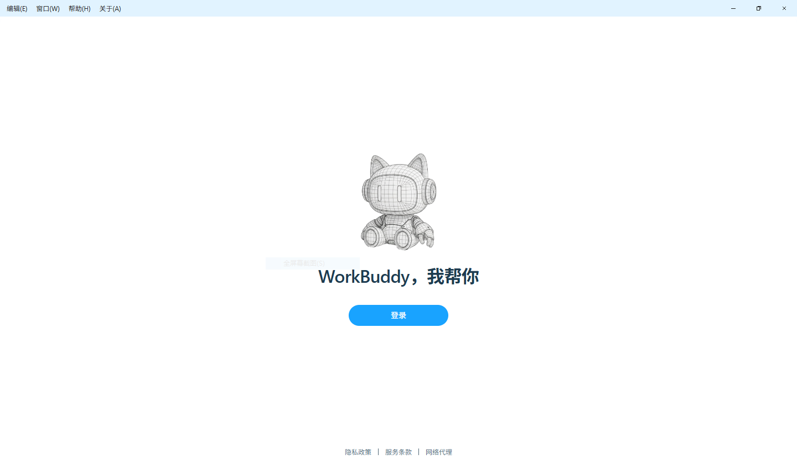
先在软件上点「登录」
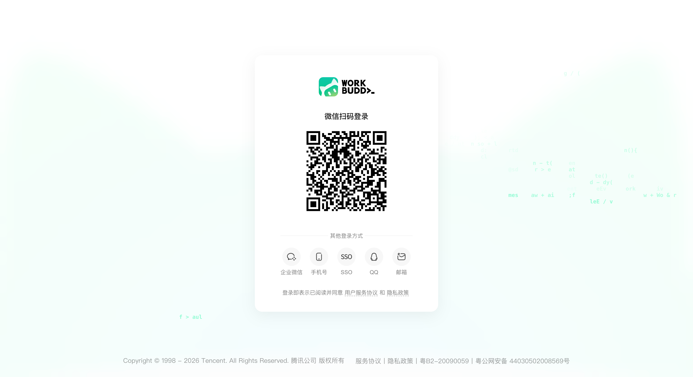
跳转浏览器 → 勾选协议 → 微信扫码完成
③ 看到主界面就绪
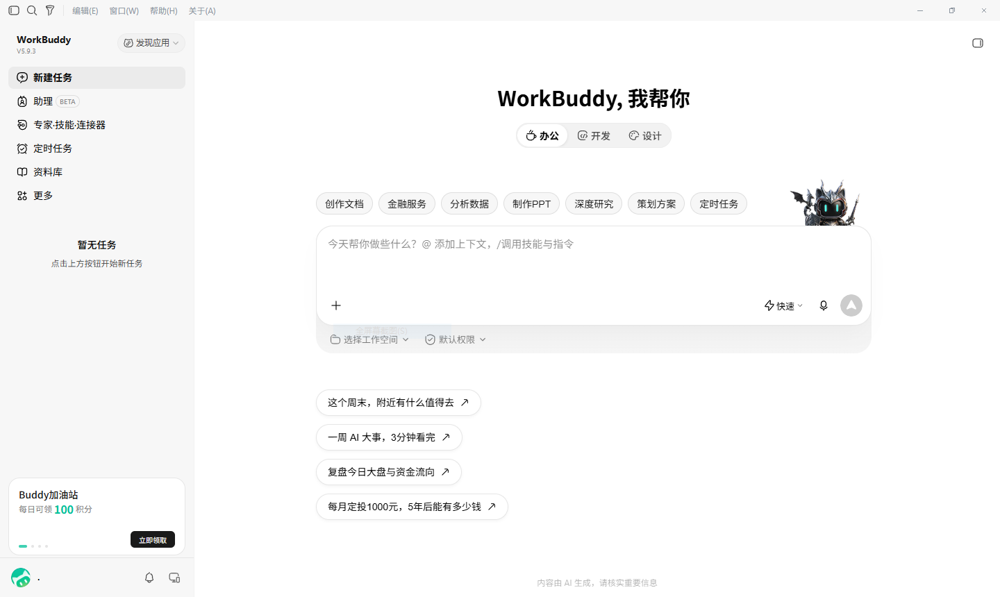
登录成功看到主界面即就绪，下一步开始干活。
🎁 签到积分：每月白嫖 AI 积分
打开 WorkBuddy 后，先领积分：个人版每月送 500 基础积分 ，教师版每月 2000 积分 （教师版与个人版积分不通用 ）。
① 点左下角用户名 → Buddy 加油站
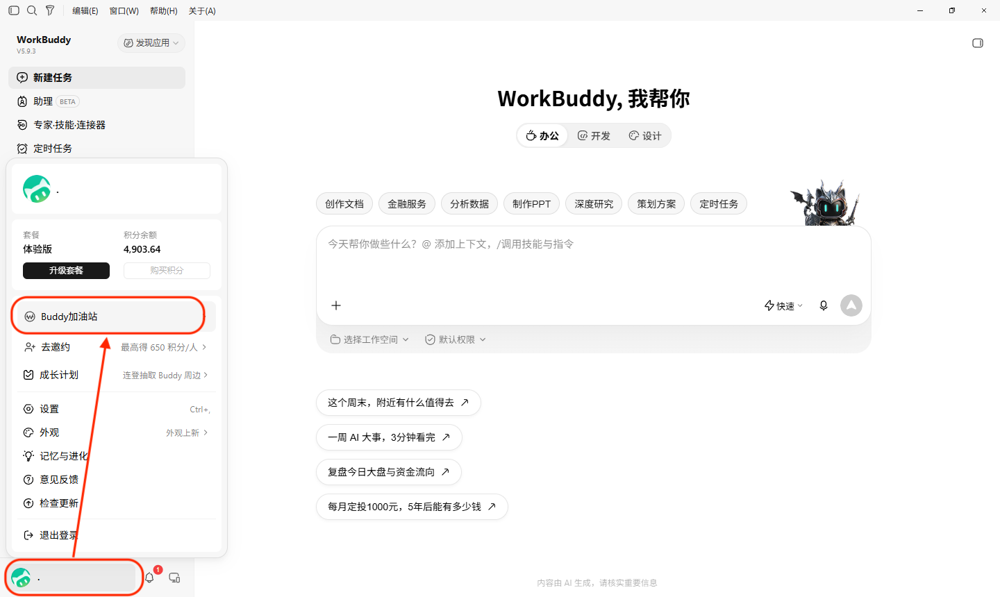
主界面左下角点自己头像/用户名，找到「Buddy 加油站」入口
② 点击「立即领取」
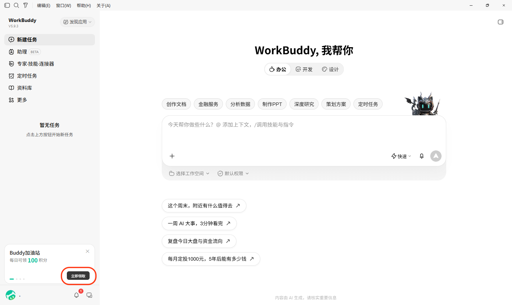
进入加油站后点击「立即领取」，当月积分到账，随到随领
⚙️ 环境要求 :Windows 10 及以上(不支持 Windows 7 / 8 / 8.1);实训室机器已全部预装,打开就能用
🏠
想在自己电脑上装 :访问
workbuddy.cn → 点「立即下载」→ 双击安装包,一路「下一步」→ 装完双击桌面图标、微信扫码登录。全程约 5 分钟,不需要配任何环境。
🏠 回家自装完整流程（课堂不演示,需要时照着做）
实训室机器已预装，课上只做上面 3 步。这一段留给你回家在自己电脑上装时照着走——一共 5 步，全部截图都在。
📦 步骤 2:安装
3
选择安装路径(默认路径可直接下一步)→ 点击下一步
5
安装完成 → 点击完成退出安装向导💡 装完回到顶部：双击桌面图标 + 微信扫码登录（见上方快速开始 ①②③）
✅ 就绪验收
双击图标打开 → 微信扫码登录 → 看到主界面，即完成。下一页就让它干第一个活。
2.3 🚀 第一次对话--从一句话开始
1 提示词三要素:把指令说清楚 = 成功一半
差的提示词 = 反复返工;好的提示词 = 一次到位。记住三个要素:角色 + 任务 + 输出约束 。
🎭
(1) 角色设定
告诉 AI"扮演谁" 。例:"你是中职 XX 课程教学设计顾问"
💡 一句话： 给 AI 一个"身份"，它就用那个身份的专业口吻替你思考
🎯
(2) 任务明确
告诉 AI"你要做什么" 。例:"帮我诊断课程与行业需求的匹配度"
💡 一句话： 一句话说清"要做什么"，AI 才不会跑偏、泛泛而谈
📋
(3) 输出约束
告诉 AI"输出什么格式" 。例:"表格形式,列名:模块|现状|差距|建议"
💡 一句话： 规定好"格式"，AI 的输出你拿来就能直接用
2 模糊 vs 精准:感受三要素的威力
❌ 模糊版(不好)
帮我看看我的课有什么问题。
复制
AI 输出笼统泛泛而谈 → 追问 3-4 次才能用
✅ 精准版(好)
你是中职「手机编程应用」课程的教学设计顾问。
请帮我做课程诊断:对比课程内容与行业需求,找出匹配度最低的 3 个模块。
输出格式:表格,列名:模块名称 | 现状 | 行业需求差距 | 升级建议
复制
角色✅ 任务✅ 输出约束✅ → 一步到位,直接可用
💡 三要素缺任何一个,AI 输出质量都会明显下降。 现在用三要素跑通第一个例子。
3 📋 初体验:用 AI 分析学生成绩
期末到了,拿到一份 学生成绩.csv(班级、学号、姓名,月考 / 平时 / 期中 / 期末 / 总评,在学员资料包/示例数据/ 里)。手动统计要半天,现在用三要素写好指令,让 AI 几秒搞定。注意 :相同的提示词,不同模型的输出内容和形式可能有差异,这是正常现象。关键是把角色、任务、输出约束 说清楚,AI 就能给出可用结果。
✅ 高质量提示词示范
你是一位资深的数据分析老师。
请分析这份 学生成绩.csv,找出每班的:
1. 平均分、最高分、最低分
2. 不及格人数和占比
3. 各分数段分布
输出一份 Excel 报告,包含:
- 数据表格
- 各班分布柱状图
- 200 字左右文字分析
文件保存到当前工作目录。
复制
🎭 角色 第 1 句:资深数据分析老师
🎯 任务 第 2~5 行:哪份文件、看哪 3 项
📋 输出约束 后 6 行:Excel 报告 + 存哪
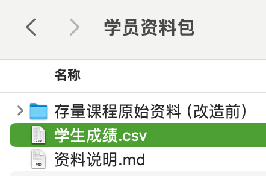
📍 学生成绩.csv 文件位置
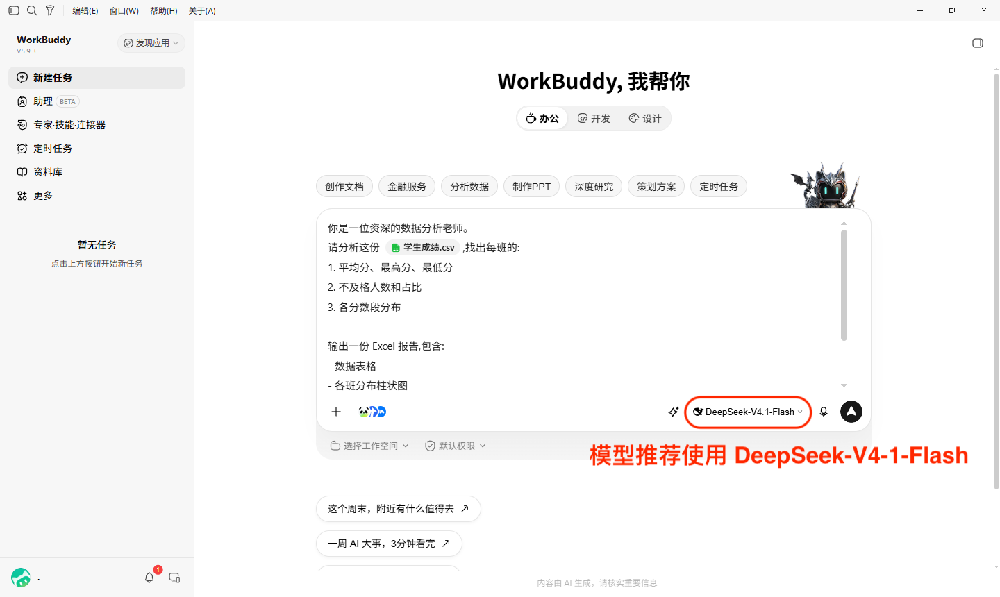
📍 在输入框填入提示词、但还没按回车发送的界面
旧版截图 图里「新建任务」＝现在的「新建对话」,「选择工作空间」＝现在的「选择分组」
⚠️ 注意:模型用默认的就行,不用折腾
输入框右下角 显示当前模型,打开默认是 「快速」档 ,问答、写文案、跑这次实操都够用,先别动它 。其余模型怎么挑、倍率看哪一列、免费档是哪个,3.1 第 4 段细讲,这一步先不管。
4 添加上下文--把「学生成绩.csv」交给 AI
在输入框写需求前,先添加上下文 (即 AI 需要的文件、图片或技能)。WorkBuddy 提供 3 种添加方式,这一步用「添加本地文件」或「粘贴文件」就行 --不用先设目录;@引用 这一步先跳过 ,等你把分组设好(3.1 讲)它才认得出文件。
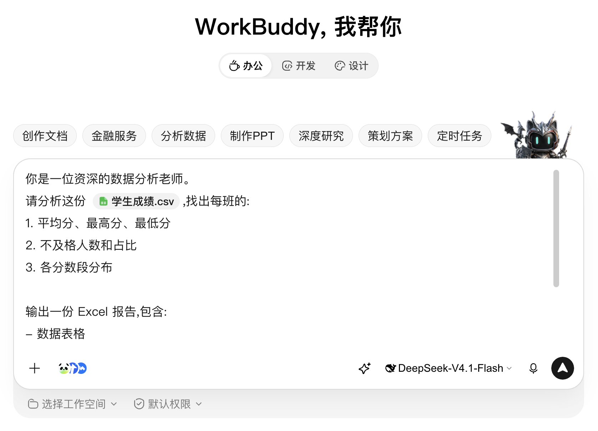
上下文区域
输入框上方的文件区
添加后文件显示在此
旧版截图 图里「选择工作空间」＝现在的「选择分组」
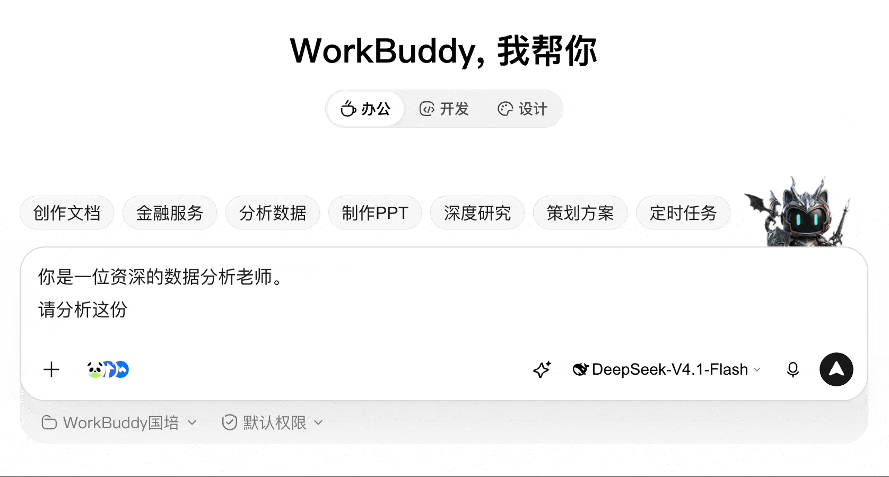
@引用 这一步先不用
输入 @ 触发文件选择,只能选到分组根目录 里的文件⚠️ 没设分组就 @ 不到--设好分组(3.1)再回头用
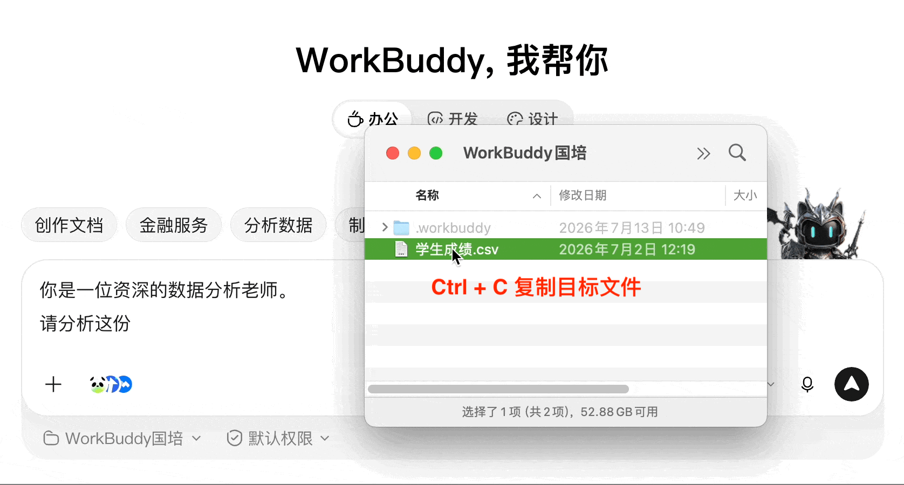
粘贴文件
Ctrl+V 粘贴:截图、表格数据、文本片段
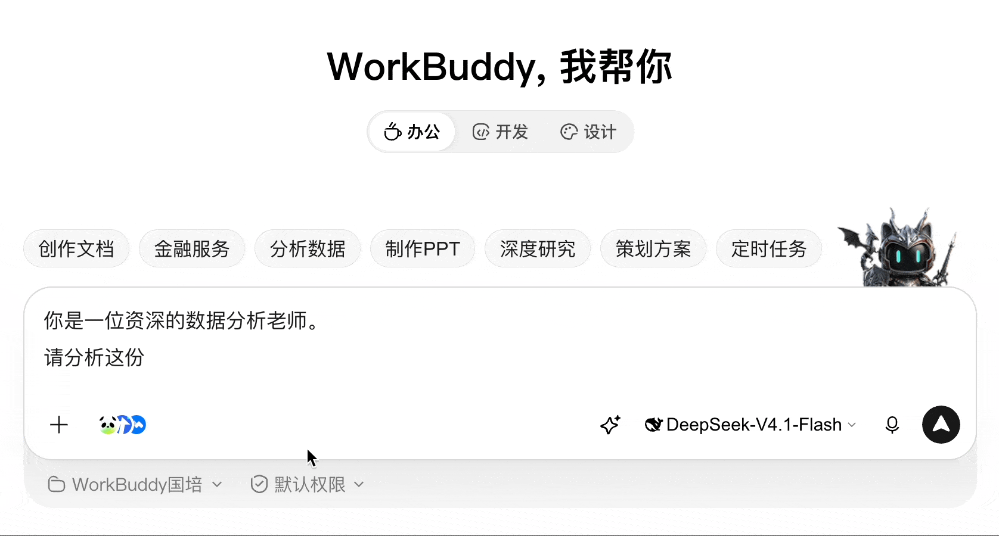
添加本地文件
点「添加本地文件」选文件
👉 顺序别颠倒 :点「添加本地文件」选中 学生成绩.csv → 文件挂到输入框上方 → 再把第 3 步那段提示词粘进去 ,回车。
📎 支持的文件类型
📄 PDF / Word / TXT / Markdown / RTF 📊 Excel / CSV / TSV
🎤 语音输入:点麦克风,或长按 ALT 说话
↑ 召回:输入框为空时按 ↑,翻出上次发过的内容
📋 长文粘贴超 3000 字会自动收起成一条
5 AI 执行--看着它分析成绩
发送后 AI 自动开始执行,对话区实时展示每一步:读取文件 → 读取 学生成绩.csv,解析数据结构数据分析 → 按班级分组,计算平均分、最高分、不及格人数等指标生成 Excel → 调用技能生成报告,含 3 个 Sheet(核心指标汇总、分数段分布、文字分析)文件保存 → 将 学生成绩分析报告.xlsx 保存到工作目录
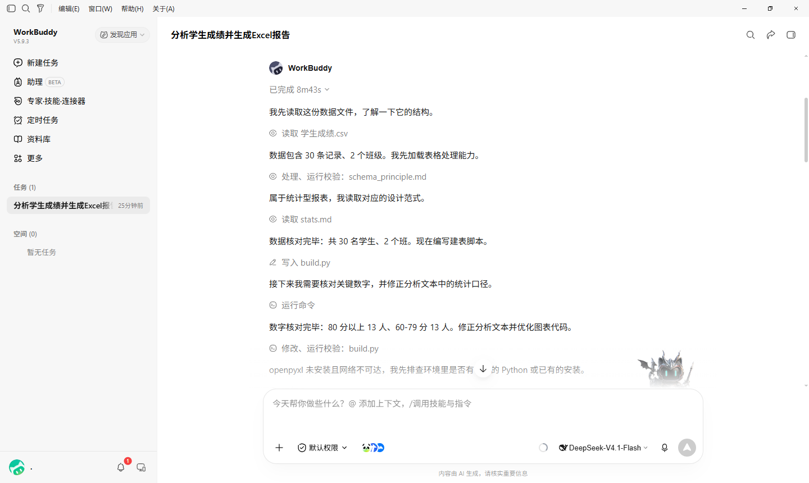
📍 AI执行过程
旧版截图 图里「任务」「空间」＝现在的「最近」「分组」
6 查看结果--成绩分析报告长这样
这一轮跑完后:对话区 展示统计结果摘要(各班平均分/不及格率等)「查看所有产物」 → 右侧结果区自动打开,列出所有生成的文件学生成绩分析报告.xlsx) → 在结果区中直接打开预览可在结果区中直接编辑文件 ,或开一条新对话
⚠️ 别拿自己的报告跟旁边老师一字一字对:换个模型、隔几天再问 ,同一份数据同一句提示词也会给出不一样的报告--几个 sheet、图做成什么样都会变,这很正常。要看的是数字对不对、分析有没有依据,不是长得像不像。
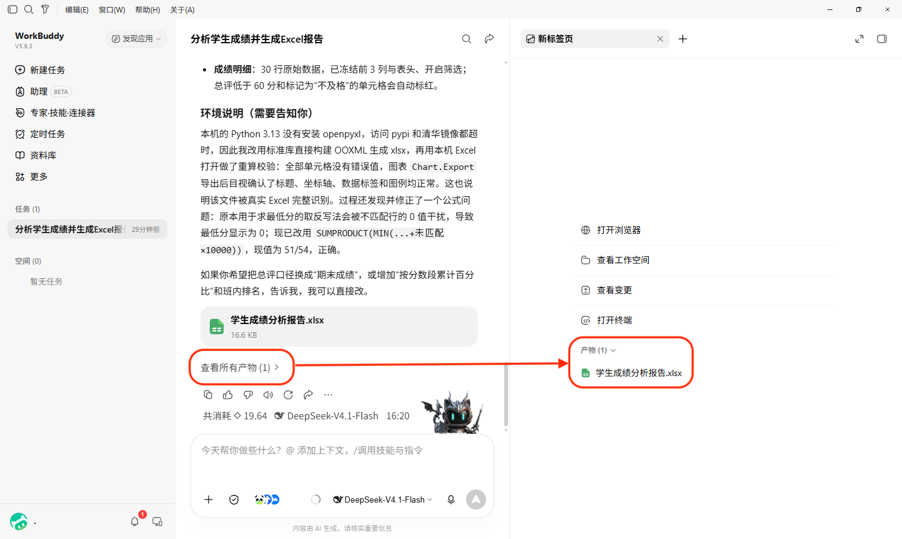
📍 右侧结果区
旧版截图 图里「查看工作空间」＝「查看文件夹」
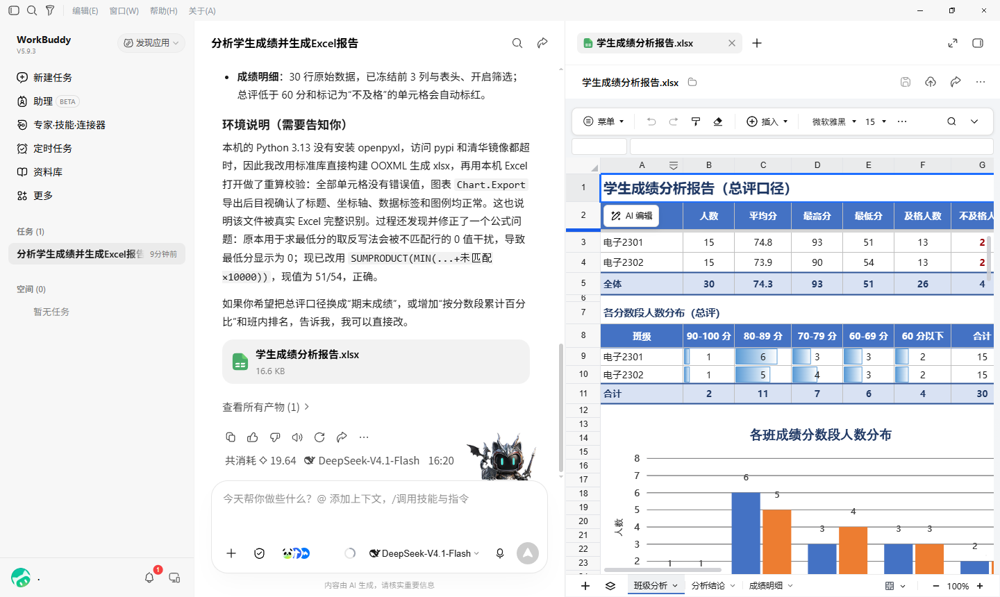
📍 产物面板
旧版截图 图里「任务」「空间」＝现在的「最近」「分组」
3.1 🗺️ 认识操作主界面--三个区 · 对话区的设置
💡 刚才你已经跑完第一个例子。这一页把界面拆开看--在哪里下指令、在哪里看结果、哪里需要设置 。对话区下面四个设置(分组 / 模式 / 模型 / 权限)选对,后面的四步实操会顺很多。
1 界面分三区--记住这三个区就够用
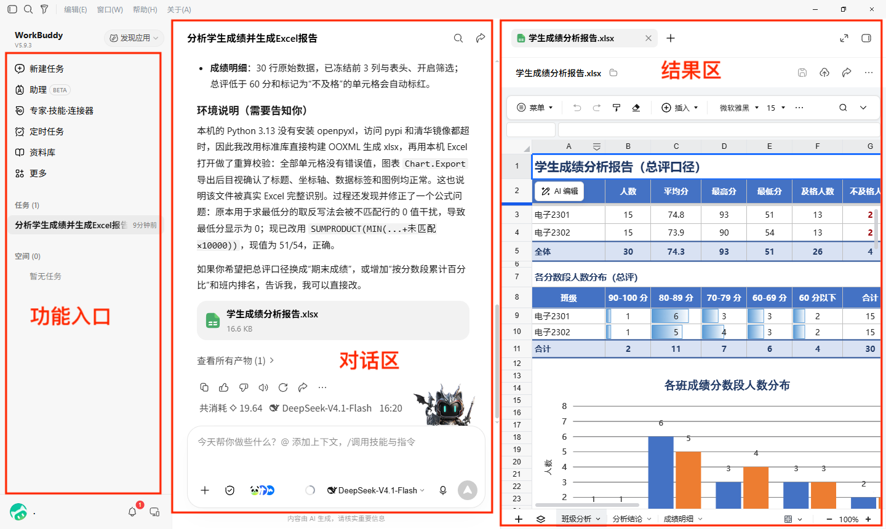
📍 一个例子跑完之后的样子:左边「最近」、中间对话、右边结果
旧版截图 图里「任务」「空间」＝现在的「最近」「分组」
① 侧边栏(左)--功能入口
上半部分:新建对话 · 助理 · 专家·技能·连接器 · 定时任务 · 资料库 · 更多 「最近」 和「分组」 --下一段专门讲这两个怎么配合。
② 对话区(中)--下指令的地方
顶部对话标题 → 中间消息流(AI 每一步干了什么实时显示 ,干完给你一张产物卡片 )→ 底部输入框。左边 + 菜单 (模式藏在这里)、技能 ;右边写着当前模型 ,再往右是语音和发送。输入框正下方 还有两个下拉:选择分组 和默认权限 。
③ 结果区(右)--验收成果的地方
点对话里的产物卡片,文件直接在这一侧打开 --Excel 表格能看、能改,不用另开软件。打开浏览器 / 查看文件夹 / 查看变更 / 打开终端 (旧版这个入口叫「查看工作空间」),下面还有产物列表 (第 6 段细讲)。
另外,顶部还有一行工具栏(编辑 / 窗口 / 帮助),平时基本不用点;左下角头像点开是设置、积分和版本号。
2 「最近」与「分组」--一个是总表,一个是目录
ℹ️ 版本差异：只改了名字，位置和操作不变。 工作空间 → 分组 选择工作空间=选择分组 · ＋新建工作空间=＋新建分组 · 空间列表=分组列表 · 查看工作空间=查看文件夹任务 → 最近 任务列表=最近列表图注带 旧版截图 的，按这个对照念。
三区先混个脸熟就行。真正要现在搞懂的,是侧边栏下半部分那两个列表 ——「最近」和「分组」:这俩看着不起眼,却决定了你每次干活之后文件去哪、下次还找不找得到 。这两个不是两拨对话 :「最近」是全部对话 的总表,「分组」是同一批对话 按文件夹再排一遍。
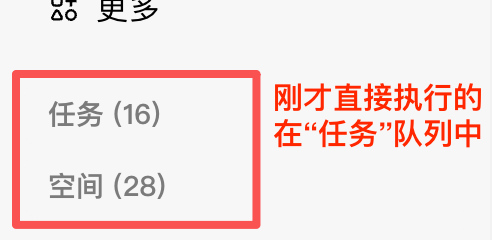
📍 侧边栏下半部分:上「最近」、下「分组」两个列表
📋 「最近」--所有对话都在这儿,新的排最上
打开客户端,在输入框里直接写要求 、回车,AI 跑完一轮就多出一条记录 ,自动排进「最近」,新的排最上 。点一下能回到那次对话接着聊,当时的产物也还在。📌 总表 :设没设分组,对话都在这儿。⚠️ 但没设分组时 :WorkBuddy 会自动建一个临时目录 把活干完。文件不会丢,可目录名是它起的、位置不好找,而且只挂在这一次对话下面,在「分组」里找不到它 。✅ 什么时候这样用:临时问一句、试一下、不打算留档的活--用完就扔,不必建分组。
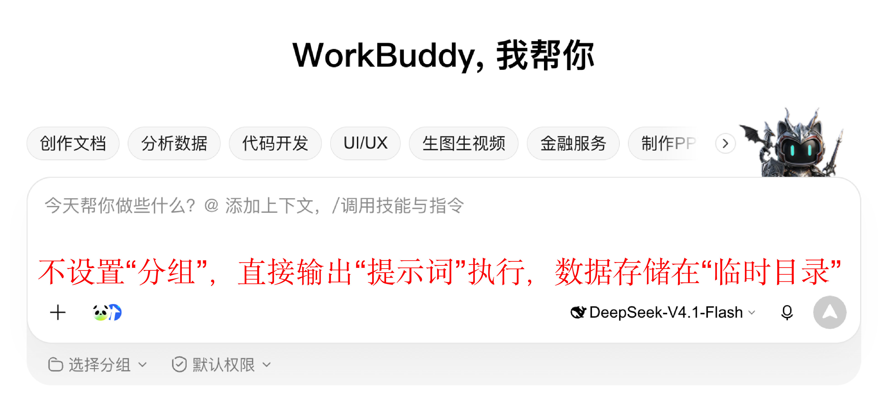
📍 不选分组,直接写提示词 → 数据落在「临时目录」
📁 「分组」--先设文件夹,再写提示词
顺序反过来:先指定一个文件夹 当分组,再往输入框里写提示词。这次对话的文件就落在这个文件夹里 ,同时在「分组」下多一条记录——不是从「最近」搬走,那儿照样有它 。怎么建 --「分组」这块有两个入口,点哪个都行:＋ 新建分组 从零建一个,交给 WorkBuddy 管📂 打开本地文件夹 直接指向你电脑上已有的文件夹✅ 好处 :同一个分组里的对话共用这个目录 --文件存进同一个地方,下次还读得到,一门课一个文件夹 ,四个实操全放这儿,回头一眼找全。🔁 补上刚才那一步 :分组设好后,输入框打 @ 就能直接引用这个目录里的文件 --2.3 里跳过的「@引用」,现在能用了。管三件事:从哪里读文件 · 成果存到哪里 · 只能在这个目录里活动(权限边界)
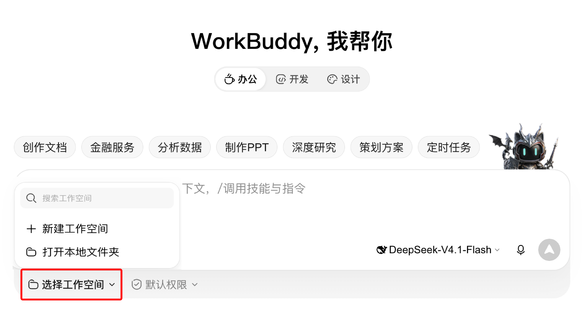
📍 先选好分组,再写提示词 → 文件落在分组目录,对话同时进「分组」和「最近」
💡 一句话分清
同一批对话,两个视角 :「最近」按时间找 --全部对话新的排最上,归没归分组都在里面;「分组」按目录找 --同一个文件夹的对话归在一起。所以顺序是先设分组、再开对话 --先说清楚"这门课的文件放 D 盘哪个文件夹",再让它干活:文件落到该落的地方,对话在「最近」和「分组」两处都能翻到。
🖐️
现在动手:建一个分组
📌 学员动手
1
在 D 盘新建 D:\WorkBuddy国培不想自己建?点「＋ 新建分组」起个名,它帮你建
3
确认:输入框下方的「选择分组」变成你的文件夹名 --就成了旧版这个位置写的是「选择工作空间」,一样
4
侧边栏「分组」里能看到它;这几步实操的对话都选这个分组「最近」里也照样能看到这几条--两个地方是同一批对话
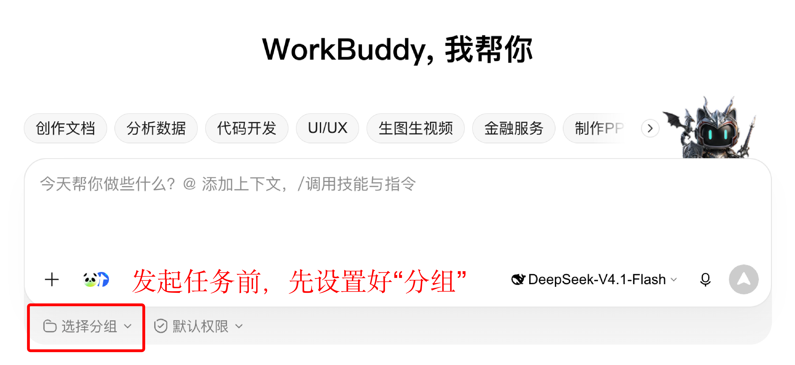
📍 红框那行就是证据:输入框左下方显示WorkBuddy国培 ,分组就设好了
🗂️ 子文件夹不用提前建 --干活时让它建,文件自然落在根目录;真需要分了,再按「一门课一个文件夹」理一次。
3 三种工作模式--默认就是 Agent,+ 菜单里只多两个开关
📍 开关在哪
点输入框右侧的 + → 展开的菜单里能看到「计划 Plan」 和「仅问答 Ask」 两个开关。两个都不开 = 默认 Agent 模式 ,这就是日常状态,不用做任何设置。
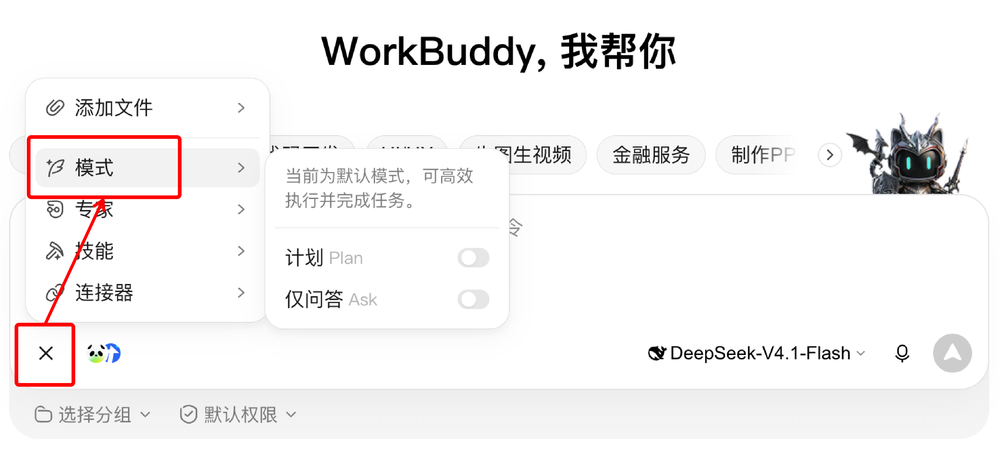
⚡ 默认(Agent)--不开任何开关
直接执行 · 效率最高
直接动手并修改文件 。需求要说清楚。
用在
🤔 计划(Plan)--+ 菜单里打开
先看方案 · 复杂任务首选
先生成执行方案 ,你确认「开始执行」后才动手。
用在
💬 仅问答(Ask)--+ 菜单里打开
只问答 · 最安全
只回答,不修改任何文件 。新手首选。
用在
⚠️ 三个细节别搞混
1 Plan 和 Ask 互斥 --一次只能开一个,开了之后输入框下方会显示模式标识,点标识上的 × 就退回默认 Agent改错了不会自动撤销 ,重要文件先备份建议新手前期一直用 Ask 或 Plan ,熟悉后再直接用 Agent
4 模型选择--默认「快速」档,想免费选 Hy3/Hy4
📍 就在输入框右下角,点模型名就能换
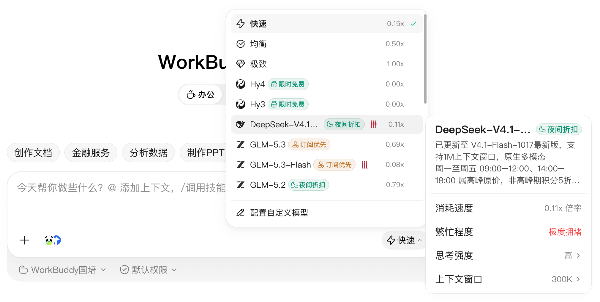
每个模型后面都标着积分配率 --数字越小越省
✅ 一句话记住
打开默认就是「快速」档(0.15x) ,日常问答、跑这次实操都够用--先别动 。想免费 就选 Hy3/Hy4(现在限时免费);我常用 DeepSeek-V4.1-Flash(0.11x) ,响应快、性价比高。认准列表里倍率数字最小 的那个最省;倍率会随活动和时段调整,上课当天以界面显示为准。
📚 列表里都有什么(以你机器上显示的为准)
模型 大致定位 倍率 快速 ★默认 日常问答、跑实操,速度优先 0.15x 均衡 质量与速度平衡 0.50x 极致 最复杂、要质量的活 1.00x Hy4 / Hy3 中文写作、会议纪要 0.00x 限时免费 DeepSeek-V4.1-Flash ⭐推荐 我常用的,响应快、性价比高 0.11x夜间折扣 GLM-5.3 / 5.3-Flash 多步骤、长流程复杂任务 0.68x / 0.08x订阅优先 GLM-5.2 复杂任务 0.79x夜间折扣
5 权限--保持「默认权限」,别开「完全访问」
默认权限 :改文件、访问分组外的位置,都要你点一下确认 完全访问 :免掉这些确认,不建议随手开 --尤其是让它动成绩、职称材料的时候位置:输入框正下方的「默认权限」 下拉。技能 / 连接器 / 专家后面3.4 单独讲 ,现在不用配。
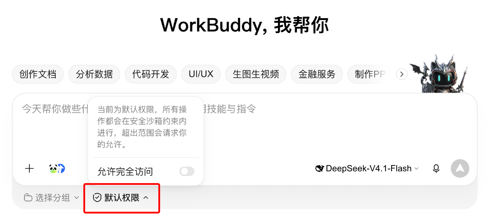
✅ 本次建议配置
• 模式:默认 Agent (任务明确,直接执行)默认模型 (日常够用,不折腾)D:\WorkBuddy国培 默认权限 (不开完全访问)
6 结果区--AI 干完活,在这里验收
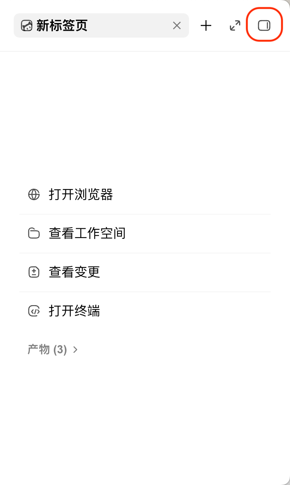
📍 结果区 = AI 的工作台:标签页(可多开) + 四个入口 + 产物列表
🌐 打开浏览器
AI 上网操作时,实时画面在这里,能随时叫停
📁 查看文件夹
整个目录的文件树,新出的文件一眼看到
📦 产物 (3)
AI 生成的所有文件都收在这里,点开就能预览 / 下载 --验收主要看它
🔍 为什么「变更」这一栏对你最重要
后面四个实操都会让 AI 动你的真文件 。每次干完活,点「查看变更」看一眼:它动了哪个文件、加了多少行、删了多少行。心里有数,才敢让它继续。看不懂的部分,直接在对话区追问「你刚才改了我哪几处」。
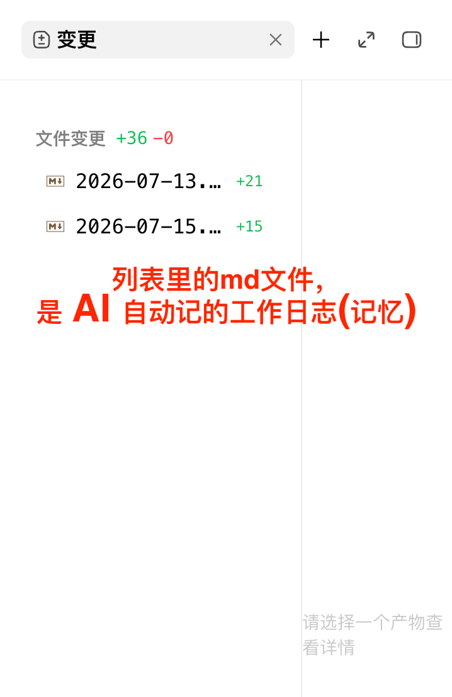
📍 点开「查看变更」:右侧红框列出改了哪个文件、加了几行.md 是 AI 自动记的工作日志(记忆) --换个会话也不「失忆」
3.2 🤖 七大核心能力--一个能力,一个真实场景
💡 七个能力不是七个口号,每一个都能直接干你手上的活 。左边说它是什么,右边就是它干出来的样子--全都是中职课堂上真会遇到的场景。
会说人话、懂上下文,能一直追问下去
🎓 把专业术语翻成学生听得懂的话
🧑🏫
你是中职电子专业老师,用通俗的话给零基础学生讲讲什么是 PLC
🤖
WorkBuddy
好的!PLC 就像一个「听话的电工师傅」--你定规则:按绿键电机转、按红键电机停,他照着做,不会忘。
核心三件事:① 看输入 ② 想逻辑 ③ 控输出。
💡 想更口语?接着一句「再讲得像跟学生聊天」就行
不只是回话,会自己调工具干活
🎓 算成绩、开网页、批量处理
🧑🏫
打开 2026 年省赛报名页面,提取报名时间和截止日期
🤖
WorkBuddy
已打开页面并提取关键信息:
📅 报名开始 3 月 1 日
⏰ 报名截止 3 月 20 日
📋 赛项:电子与信息大类 · 👥 每校限报 3 队
⚠️ 距截止还有 12 天,建议尽快提交
读你目录里的 Word / Excel / PDF,改完存回去
🎓 批量改教案、合并成绩表、出大纲
🧑🏫
读这份学生实训报告,参考上学期进度表,生成改进版《电工基础》大纲,16 周,Word
🤖
WorkBuddy
已读 2 份文件,提取 3 个问题:实训时间不足、理论薄弱、考核单一;已据此生成 16 周大纲。
📎 电工基础_课程大纲_改进版.docx
要最新信息就自己上网,还给出处
🎓 查政策、行业标准、教材配套
🤖
WorkBuddy
已检索教育部、职成司近一年文件,汇总 5 条:
① 新版专业目录 ② 办学条件达标 ③ 教师数字素养 ④ 产教融合 ⑤ 竞赛改革
📎 职业教育政策摘要_2025.docx(每条带出处链接)
能看图、听语音,也能生成图和视频
🎓 学生报错拍张图,直接问它
🧑🏫
[截图] 这段学生代码报错了,帮我看看问题在哪
🤖
WorkBuddy
已识别:Arduino 点灯代码,问题在第 8 行--
digitalWrite(ledPin, HIGT) 拼写错,应为
HIGH。
💡 教学建议:强调常量只有 HIGH / LOW / INPUT / OUTPUT
设一次,到点自己跑,不用你记着
🎓 周报、学情汇总、数据监控
🧑🏫
设置自动化:每周五 17:00 汇总本周实训记录,生成周报初稿
🤖
WorkBuddy
已创建定时任务
📅 每周五 17:00 · 📋 读本周记录 + 实训日志 · 📄 输出 Word
⏰ 下次执行:本周五 17:00,到点自动跑
你的身份、教什么、什么偏好,说一次就记住
🎓 不用每次重复「我是谁、什么水平」
🧑🏫
记住:我是高职电子专业老师,教《手机编程应用》,以后出题按实操为主
🤖
WorkBuddy
已记下你的教师档案:身份 · 授课 · 偏好。以后你说「出几道题」,默认就按「高职 + 实操」来。
👉 这一项下一页单独细讲(3.3)
✅ 单一能力是工具,组合起来才是同事
「联网搜素材 + 读文件 + 生成 Word」= 一份完整备课包;再叠加「记忆」自动带上你的课程背景,越用越顺手。
3.3 🧠 记忆能力--说一次,以后都记得
💡 普通聊天 AI 每次都是新的开始。WorkBuddy 会把关于你的信息记下来 ,下次任务自动带上--你不用说第二遍"我是谁、教什么、什么水平"。
☁️ 云端记忆
开关 · 建议开
记住对话中的重要信息,让后续回答更贴合你
它自己总结 :每晚整理当天的对话,自动生成你的「工作背景 」--截图里那段"…专任教师…"就是它写的。你能管 :「管理云端记忆」里四个动作--查看 · 编辑 · 重置 · 导入 (编辑是直接用对话告诉它"记住什么/忘掉什么")。跨设备 :跟着账号走,换台电脑也带得过去。
📁 本地记忆与技能
开关 · 建议开
记录有长期价值的项目成果和约定,支持用户级和项目级
用户级 --你主动说的"我是谁、教什么、什么偏好",所有项目通用 。项目级 --跟着分组 走,只在这门课 / 这个目录里生效,换个项目就不带过去。存在你本机,教三门课不会串味。 打开开关就完事,AI 自动记,你基本不用管。
① 左下角头像 → 记忆与进化
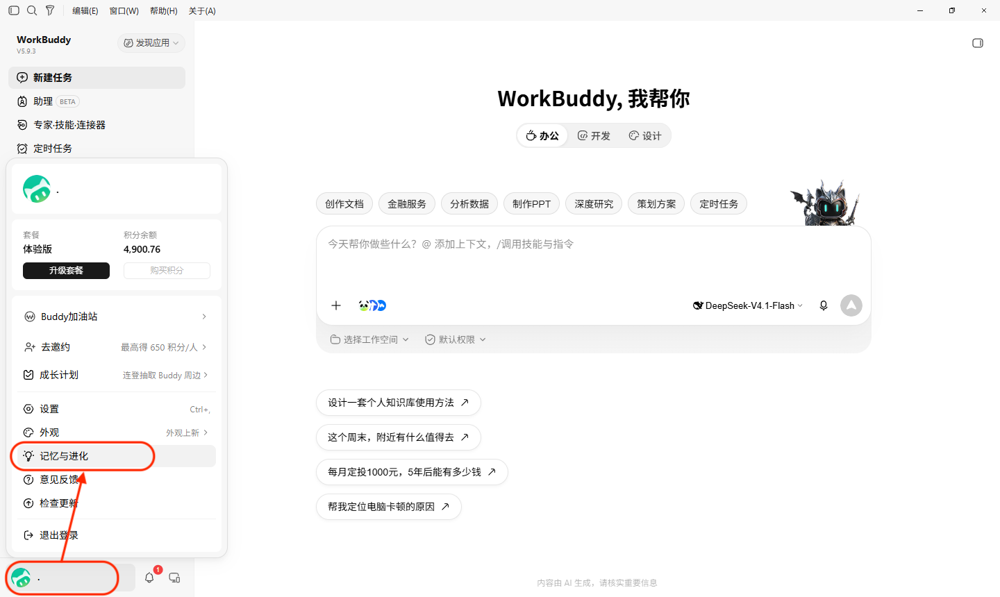
② 两个开关 + 「管理云端记忆」
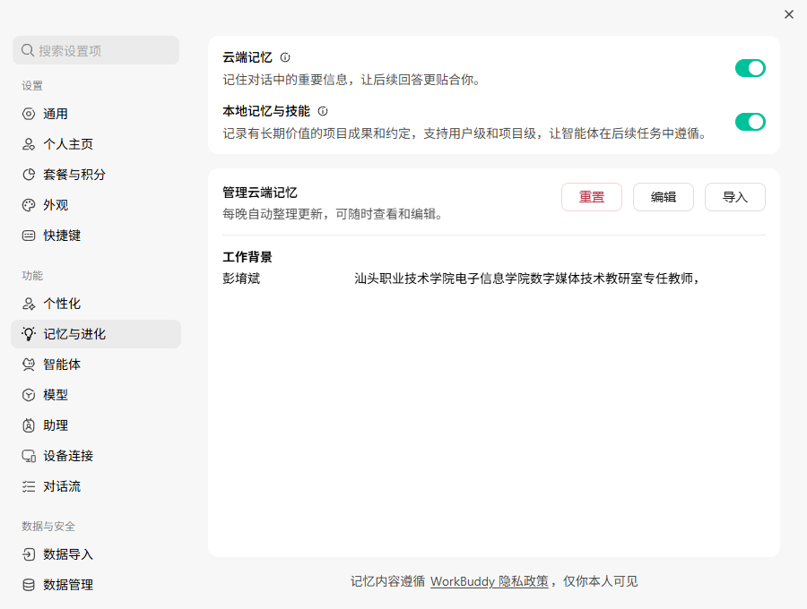
右上角还有「重置 / 编辑 / 导入 」三个按钮,下面就是它自动写的工作背景 。这套设置不消耗积分 ,内容仅你本人可见 。
③ 说一次:让它记住你
🧑🏫
记住:我是汕头职业技术学院电子专业老师,教《手机编程应用》(Flutter),以后出的题按高职水平、实操为主
🤖
WorkBuddy · 写入记忆
已记下你的教师档案:
👤 身份 · 📚 授课 · 🎯 偏好
💡 写进「用户级」,所有项目通用
④ 下次:自动带上,不用重复
🤖
WorkBuddy · 自动带入记忆
按你的档案(高职 + 实操)出题:
1 Flutter 的 Hot Reload 有什么用?
2 下列哪个是声明式 UI 组件?
3「一套代码多端运行」指什么?
✅ 背景自动带上,不用再交代一遍
💡 关键就两个字 记住: --不用研究"写入长期记忆"这种术语,也不用去设置页填表;对话里加 记住: 它就当回事 ,漏了可以说"刚才说的记一下"。
⚠️ 记错了能改 :在「编辑」里说"把 XX 改成 XX"或"忘掉 XX";不想用就随时关 --关掉后不再提取,但已生成的产出不会追溯撤回。
3.4 🧩 专家 · 技能 · 连接器--一个入口,三样外挂
💡 侧边栏有一项「专家 · 技能 · 连接器」 ,点开是三个标签页 (「专家」页里再分专家 和专家团 )。3.2 讲的是它自己会什么 ;这一页讲的是怎么让它多会一点 --先认清这几样各管什么、什么时候值得动,不用一次配齐 。
👤
专家 · 换个人来回答
一位专家 = 角色 + 做法 + 说话方式 。选中之后整场对话都按他的路子走,不用你每次都交代"你是一位中职教学设计专家"。
本质 :把「人设 + 方法论」用文本写好打包 --"我是谁、怎么想、怎么做"全固化下来,读它来驱动对话(不是黑盒)。.md 对比:记忆记的是「发生过什么」 (数据),专家定的是「该怎么干」 (规则)。
在哪 :侧边栏「专家·技能·连接器」→ 专家 ,按分类挑(教学设计 / 论文写作 / 数据分析…);教育公益版另有 209 位教育专家 。什么时候用 :整件事都要专业视角 时--比如改一份要参赛的教案。
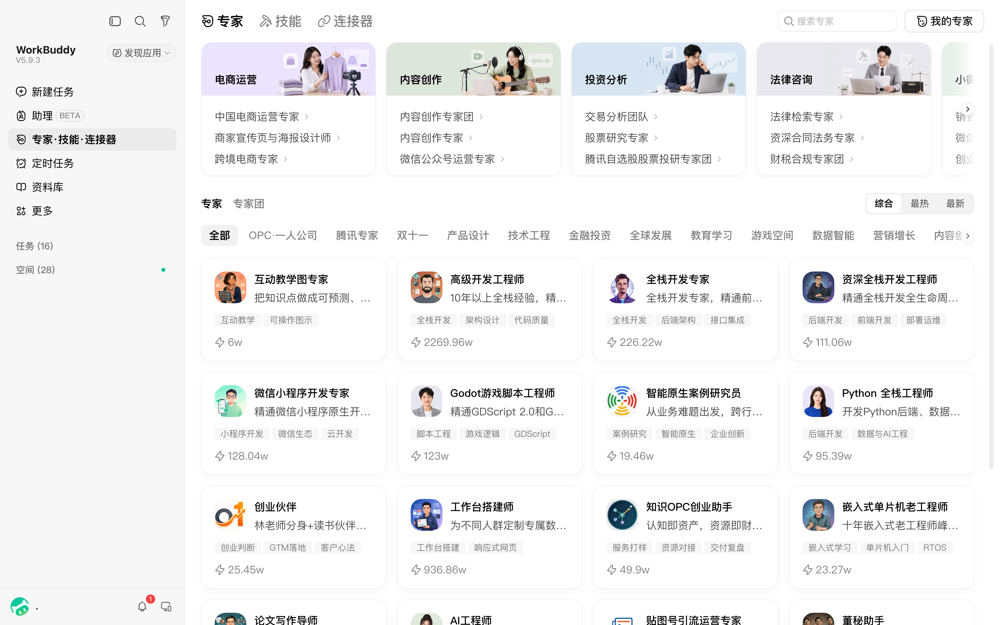
👥
专家团 · 多个专家一起上
一个专家团 = 把多个专家打包成一个整体 ,设计、数据、论文各管一摊、互相配合 。单个专家顾不过来的活,交给它。
本质 :和专家同源,只是把几个专家打包协同 --一个任务里多角色分头干、再汇总。和单个专家对比:单个是一个视角 ,专家团是多个视角配合 。
在哪 :同一个入口「专家」标签页 → 专家团 分类。什么时候用 :一件任务要跨多个专业领域协同 时--比如「做教学设计 + 分析成绩 + 改论文」一条龙。
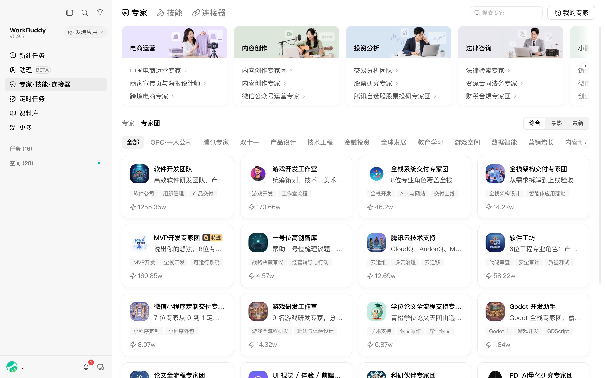
📦
技能 · 多一门手艺
一个技能 = 一份打包好的"做事说明" (步骤 + 模板 + 脚本)。同一件事,用技能比纯聊天稳、格式统一 ,不用你反复纠正。
本质 :一份写死的操作流程 (步骤 + 模板 + 脚本)--"分几步、每步怎么做"全固化,AI 照着跑,不用临场发挥。和专家对比:专家换谁来做 (角色),技能定怎么做的固定套路 (流程)。
在哪 :侧边栏 → 技能 ;输入框上方也有「技能」按钮,临时用一次更快。内置 PPT 制作 / Excel 报表 / 海报 / PDF 处理…,也能导入社区技能。什么时候用 :同一件事一个月要做好几次 时。
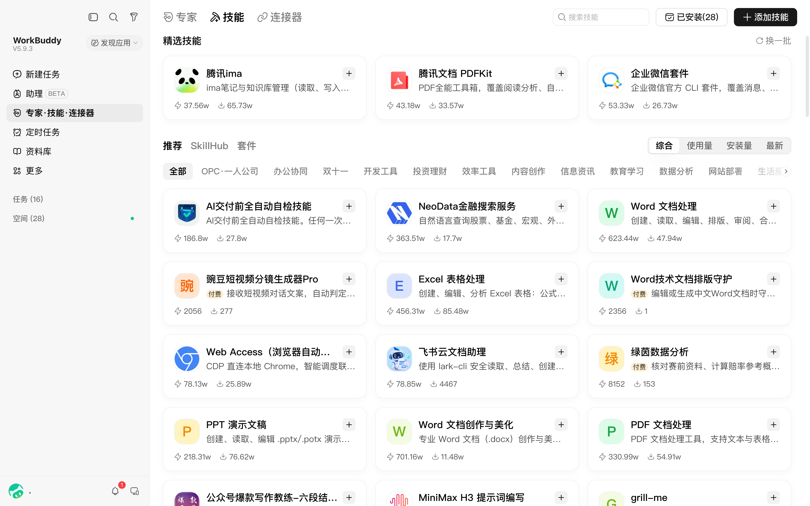
🔗
连接器 · 手伸到外面
让 AI 读得到、也放得进 你电脑之外的东西--腾讯文档、腾讯会议、ima 知识库、腾讯网盘、邮箱。它不再只看得见桌面上那几个文件。
本质 :一条授权的通道 --通过接口把 AI 连到电脑外的系统(云文档 / 邮箱 / 知识库),授权一次就能读写,不用手动搬。和技能对比:技能管本地怎么干 ,连接器管够得着哪些外部资源 。
在哪 :侧边栏 → 连接器 ,授权一次 以后都通。什么时候用 :资料散在群文件、云文档里,不想一个个下载再上传 时。第 8 章会真的用它。
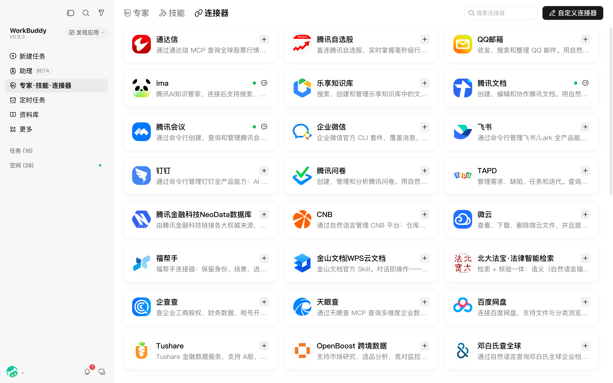
🔗 连接关系示意:授权一次,AI 就能读写这些外部系统
WorkBuddy
你的 AI 中枢
腾讯文档
腾讯会议
ima 知识库
腾讯网盘
邮箱
💾
都在本机——不跟账号跨设备
专家 / 专家团 / 技能 / 连接器都装在你这台电脑 上,换台电脑要重新装、重新授权 ;真正跟着账号走、自动带过去的是 3.3 讲的云端记忆 。
🎬 现场实操:用「签到技能」设一个每晚 11 点自动签到的定时任务
1
打开技能页
侧边栏点「专家 · 技能 · 连接器」,切到「技能」页面。
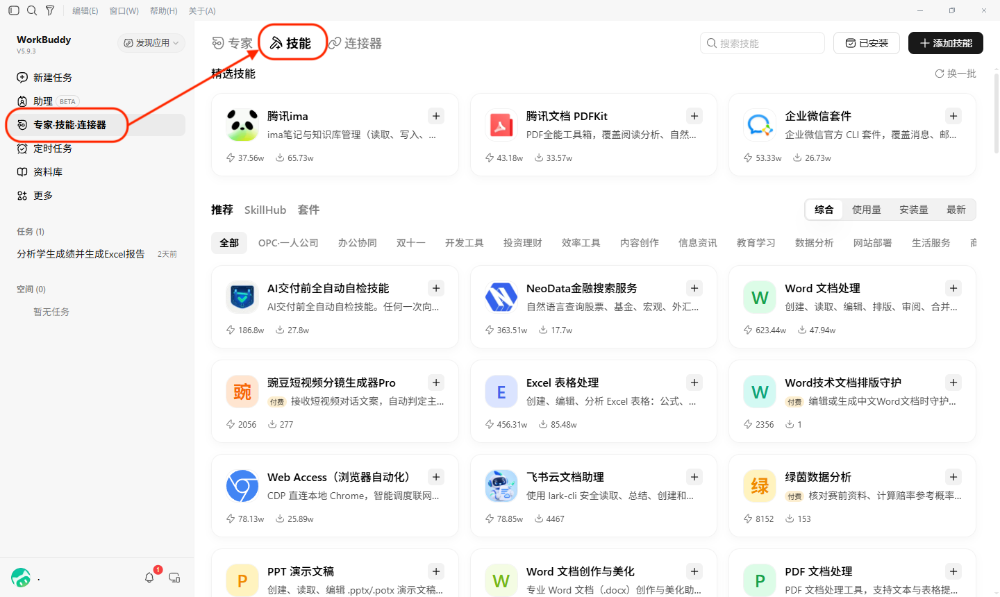
2
搜索签到技能
搜索「workbuddy签到」,任选一个签到技能。
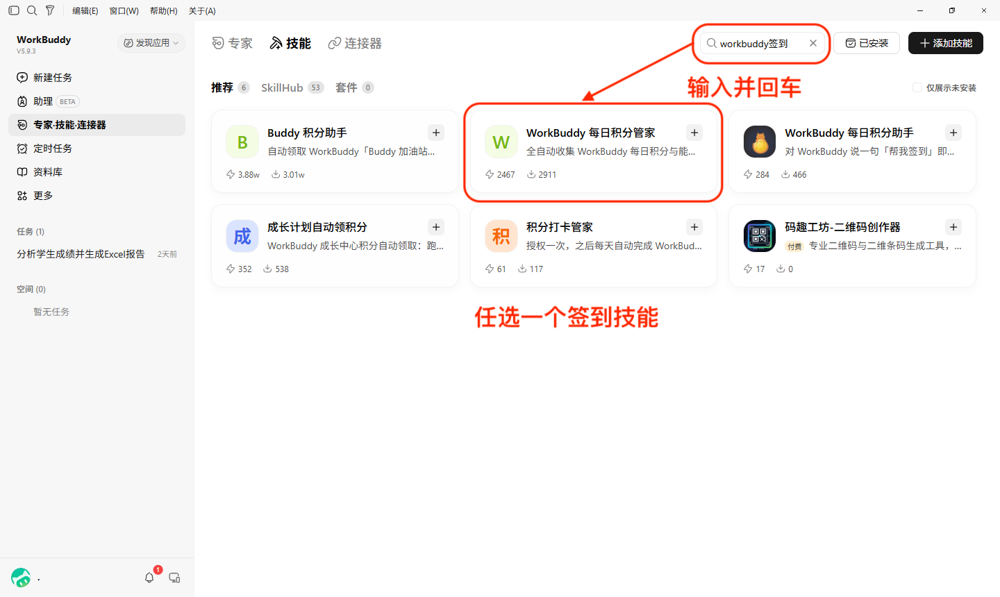
3
安装并使用
查看介绍 → 点「安装」,装好后点「去试试」。
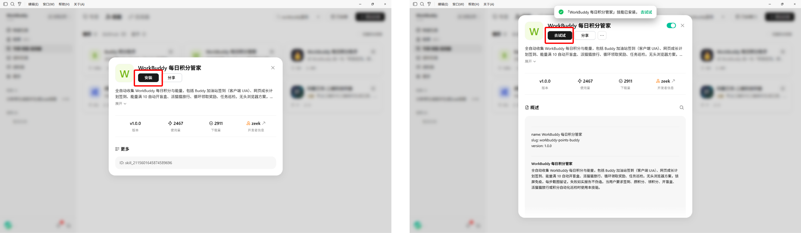
4
下定时任务
输入框输入「设置一个每晚 11 点自动签到的定时任务」。
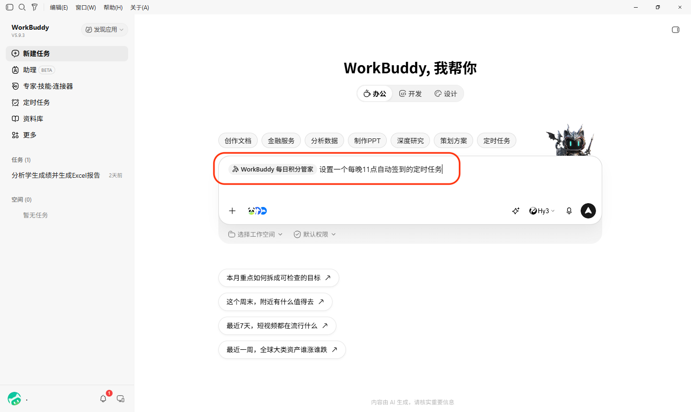
5
查看结果
AI 执行完,在对话区看签到结果。
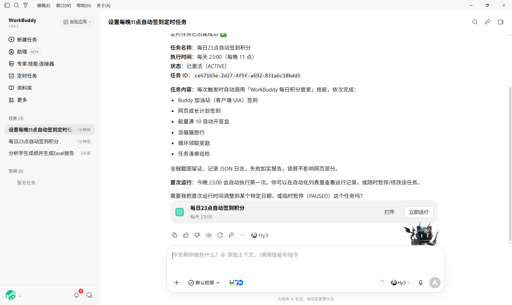
6
查定时任务
点侧边栏「定时任务」,查看已创建的任务。
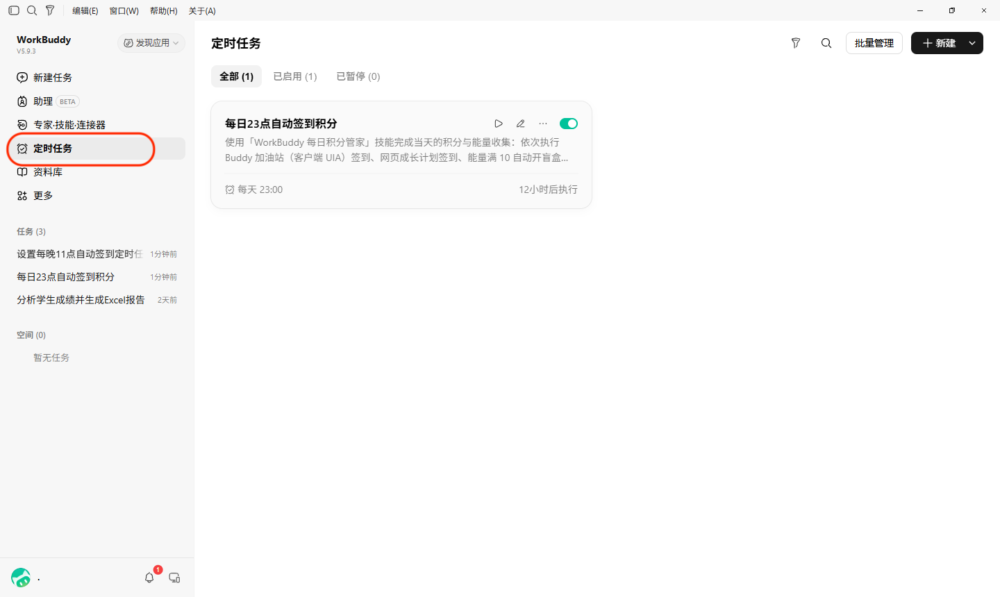
💡 从装技能到自动签到,你只下了一句话 指令--「每晚 11 点自动签到」 ;中间那些步骤都是技能里提前写好的 ,不用你一步步敲。这就是「技能」和「聊天」的区别。
⚠️
说明白一点 :这个定时任务跑在你这台电脑上 ,不是云端 。要它每晚 11 点真的自动签到,前提是到点时这台电脑开着、WorkBuddy 一直在后台运行 ;电脑关机、睡眠,或退出了 WorkBuddy,任务就不会执行。
🧠 一句话记住
专家 换脑子 · 技能 加手艺 · 连接器 通外网--三样都在同一个入口 里,不用记三个地方。等你发现"这句话我上周也说过一遍" ,就该去配技能了。
3.5 🛡️ 安全使用守则--红线别碰,绿线照做
AI 是好同事,也是新同事 --中职教师日常接触学生信息、考试题、职称材料 ,交出去之前先看一眼。
🔴 红线 · 千万别这么做 5 条
01
整表带姓名、学号、成绩直接丢给 AI 先脱敏:只留学号 + 编号 + 分数
02
把未公开的考试题、题库发给 AI 题型可以让它出,原题传出去就作废了
03
没备份就让 AI 批量改教案、课件 原稿改错了不会自动撤销,先复制一份
04
把整个桌面 / C 盘设为工作目录 范围越大,越容易翻到不该动的东西
05
开浏览器自动化时登录教务系统 账号密码不外借,AI 也不行
🟢 绿线 · 推荐这么做 5 条
01
成绩表删姓名、留学号,班级换编号 如 202401 | B1 | 78--AI 照样能分析
02
重要文件先复制到工作目录再改 原件不动,让 AI 只碰副本
03
工作目录按任务建独立文件夹 一门课一个文件夹,互不干扰
04
新活先问一句「你打算怎么做」 看清它的计划,再点确认
05
结果不满意就继续追问修正 别推倒重来,越改越准,还省积分
🔢 30 秒脱敏操作台
STEP 03
班级换编号
计应1班 → B1,计应2班 → B2
🔁 怎么对回去 :原始表自己留着,AI 分析完按学号一对一还原,一个都不会错
脱敏只需 30 秒 ,省掉一年的后怕
学生信息 · 考试题 · 职称材料--交出去之前,先问自己一句:这份东西能公开吗?
4.1 🗺️ 课程焕新四步法--这半天的学习路线图
💡 AI 大家多少都接触过,只是场景零碎、没串成流程。这半天就做一件事:把它拧成一条能重复用的标准流程 --走完四步,拿到四份成果。
BEFORE · 现状
🧩 常见状态:用过,但没成体系
✕ 周五要交教案,打开 AI 说两句,改改就用了 ✕ 下周换门课,又得从头交代一遍背景 ✕ 上次生成的好东西,现在找不着在哪了
AFTER · 目标
🎯 本课之后:一条能重复用的流程
✓ 四步走完 --一次拿到四份成果文件✓ 每步有明确的输入输出 --不靠临场发挥✓ 换门课直接套用 --不用重新摸索
🎒
动手前只需要:一台电脑 《手机编程应用》 的培养方案、课程标准、授课计划、8 章教学 PPT、教材源码都在资料包里;带了自己课的,课后换成自己的材料即可。
📦 资料包里有什么
📁 学员资料包
📄 课程信息卡.docx -- 自查清单:哪项的现成文件找不到,就自己填
📁 本校课程材料 -- 课程信息以这里为准
📄 人才培养方案(课程信息摘录).pdf
📁 课程实施材料 (课程标准 · 授课计划 · 大作业评分表)
📁 教材配套材料 -- 出版社编的,另一套口径
📄 教学大纲
📁 教学设计_8 章
📁 教学 PPT_8 章
📁 教材源代码
📁 成绩数据 -- 本课程真实成绩
📄 成绩汇总_脱敏.csv -- 第 6 章学情分析用
📁 示例数据 -- 与课程无关的练习表
📄 学生成绩.csv -- 第 2 章练手用,不是本课程数据
前两个文件夹是两套东西 :本校的按培养方案来,教材的是出版社按全国通用编的。同一门课,两个来源的说法不一定一样--练的时候留意。课程编码、学分、学时、开设学期、前序后续、考核方式,培养方案摘录里都有,后面不用手抄;学生实际基础、你观察到的痛点,哪份文件里都没有,只能自己写。
🧭 四步怎么走
🔍
第一步 · 课程诊断↳ 5.2
AI 读培养方案+课程标准+教材大纲
💡 一句话： 先体检：找出课程短板，AI 帮你定位薄弱模块
👥
第二步 · 学情分析↳ 6.2
上传学生成绩数据
💡 一句话： 看学生：上传成绩表，AI 找出薄弱点+分层
🚀
第三步 · 教学设计升级↳ 7.2
结合诊断+学情
📝
第四步 · 资源一键生成↳ 8.2
基于升级方案
💡 一句话： 出资源：教案+PPT+习题一键生成，课程焕新完成
4.2 🧰 实操 0:先跟 AI 交个底
💡 这是所有实操的前提! 先把基本情况跟它交个底,它会记到长期记忆 里--以后所有任务都自动套用,不用每次重复说「我教什么课、几年级、什么风格」。用户档案 告诉 AI「你是谁」,协作规则 告诉 AI「怎么跟你配合」。不设的话,AI 每次给的都是通用模板--学段、专业、输出格式全对不上你的课。
请把以下信息记到我的长期记忆 里,以后所有任务都自动套用:
【我的身份】
- 单位:【请填你的学校名称】
- 课程:【请填你教的主课名称】
- 学生:【请填学段和年级,如中职二年级】
- 专业方向:【请填专业名称】
【我的偏好】
- 风格:直接、简洁,不用套话
- 文档:报告 Word、演示 PPT、数据表 Excel
- 没特别说,就默认 Word
记完之后回复"已记住"。
复制
📋 第一步:设用户档案
1
打开 WorkBuddy,新建一个对话 ;输入框下方的分组选 WorkBuddy国培 --这是这个分组里的第一条
3
把【请填 XXX】 替换成你的真实信息(学校、课程、学段、专业)
4
按回车发送,等 WorkBuddy 回复"已记住"
? 这 7 行为什么非写不可
身份 学段差一级,方案深度差很远--写"中职二年级",它给的例子要能直接上手、术语还得解释;换成"本科三年级",它默认你会自学
风格 不写"直接简洁",它默认给你一大段铺垫加一大段总结,你要的那句结论埋在最中间
文档 不写输出格式,它可能把整篇正文贴在对话里让你自己复制,或者丢给你一份 Markdown;写了"默认 Word",它才会直接生成文件存到磁盘上
请把以下规则记到我的长期记忆里,以后所有任务都遵守:
【沟通】
- 不确定就追问,不要瞎猜
- 每次只问一个问题
- 给结论附上依据,不会就说"不知道"
- 发现我的做法有更简单的方式,直接说出来,别顺着我的思路硬做
【安全】
- 对外操作(发邮件/发文档)先让我确认再执行
- 改或删我已有的文件之前,先备份原件,并告诉我备份放在哪
- 见到学生姓名/学号/成绩等敏感信息,提醒我先脱敏
【工作】
- 文件都存当前工作目录(就是这次对话的分组文件夹),不要写到桌面/下载/系统目录
- 文件命名:主题_日期(如 教案_2026-07-01),不要 final/v2/最新 这类后缀
- 要交付的文档直接生成文件存好,不要把正文贴在对话里让我自己复制
- 复杂任务先列计划,确认后再做
- 做完简洁汇报,不超过 5 行 :一句话结论 + 生成了哪些文件 + 下一步
记完之后回复"已记住,开始干活"。
复制
📋 第二步:设协作规则
2
复制左边的提示词,粘贴到输入框,直接回车--这一条没有要替换的【请填…】
3
等待 WorkBuddy 回复"已记住,开始干活"
工作目录不在这里填 --它就是 3.1 设的那个分组文件夹 。换目录＝换分组,不用回头改这段规则。
! 这 12 条不是在提要求,是在堵三类坑
沟通 4 条 防它自作主张--它默认会猜,猜完还不告诉你猜了什么;也默认顺着你的思路走,哪怕你的方案绕远路;等你发现方向错了,一轮活已经干完
安全 3 条 防它惹祸--覆盖原件、把没脱敏的学生名单写进输出,这些事后补不回来
工作 5 条 防成果没法用--没设分组 时,四步的成果会掉进 WorkBuddy 自动起的临时目录(按日期自动命名),和中间草稿混在一起;再叠上命名乱、汇报一大篇你不看,一旦不看,等于没监督
📸 分组选好,发出第一条
输入框左下角是 WorkBuddy国培 ,提示词粘在输入框里--回车,右侧开始一步步跑。
📸 跑完:分组里多了一条
侧边栏「分组 」展开 WorkBuddy国培,这条对话就挂在下面;下次点它就能接着聊,不用重新建。
5.1 🔍 课程诊断--找出你的课程短板
💡 定义 :用 AI 帮你找出课程中哪些模块最需要升级 你需要提供 :课程信息越全 ,AI 诊断越准 (具体需要哪些见下方提示词模板)注意 :诊断是"体检" 不是"治病"--AI 只分析问题在哪、差距多大、优先改什么,输出的是诊断报告 ,不是直接改你的课程。怎么改,后面第 7 章教学设计升级再说
课程诊断流程
1
📋 输入课程信息
→
2
🔍 AI 搜索
→
3
⚖️ AI 对比
→
4
📊 输出诊断报告
💡 本次演示用真实案例 :选一门计算机专业核心课程「手机编程应用」做诊断示范
📌 演示案例:手机编程应用(存量课程)
这本教材的技术栈停在 2018 年 ,比今天落后 8 个大版本 --存量课程可能存在类似问题,这一站就拿它当样本。
课程规划 学校定的--查培养方案
计算机专业核心课,面向 Android 原生开发
4 学分,72 学时(理论 0 + 实训 72)
第 4 学期,二年级下,已修 C 语言程序设计
考核:考查,考勤 30% + 作业 30% + 大作业 40%
教材选用 出版社编的--查教材和大纲
《Android项目实战--博学谷(第2版)》
2021 年出版,已 5 年
技术栈:Java + XML + Android SDK
工具链:Android Studio 3.2 / Android 9
项目案例:注册登录→看视频→做习题
痛点 :教材三个项目照书敲能跑,离开书不知道从哪下手--学生会的是「复现」,不是「开发」
👉 先记住这门课的样子。等会儿 AI 给出薄弱模块,你对照一下:它看出来的,和你平时觉得别扭的地方,是同一个吗?
📄 课程规划取自《2024 级信息安全技术应用专业人才培养方案》第 24、28 页(课程编码 01131110C,资料包里给了这两页的摘录);教材选用取自教材本身和出版社的教学大纲。
5.2 🔍 实操 1:课程诊断--讲师演示 → 学员跟做 ⭐实操
👨🏫 第一阶段:讲师演示
👨🏫 演示用 填的是讲师的课,别整段复制;橙色=要换成你自己的,紫色=讲课要点
我要做一次课程诊断。我教一门课程「手机编程应用」 ,是面向安卓系统的手机应用开发方向的计算机专业核心课。
【手边的材料,都在工作目录里,先读再动手】
- 学员资料包/本校课程材料/ -- 培养方案 + 课程标准、授课计划、评分表
- 学员资料包/教材配套材料/教学大纲 -- 只读这一份
课程编码、学分、学时、开设学期、前序后续课程、考核方式,都从这些文件里读,不用我另说。
读完先在报告开头列一张表:每份文件你读到了哪些信息、缺哪几项。
【文件里没有、只有我知道的】
- 授课对象:二年级下学期,学生只学过 C 语言,Java 语法要从零教
- 课程现有痛点:学生跟着抄能做,离开书不会独立开发,不理解代码
- 教材与工具链(大纲里没有,以这条为准):《Android项目实战--博学谷(第2版)》2021 年出版,Java + XML + Android SDK,Android Studio 3.2.0 / Android 9.0
请帮我做课程诊断:
1. 联网搜索 当前"移动应用开发"领域的行业最新需求和技术趋势
2. 对比我的课程内容与教材与行业现状,找出匹配度最低的 3-5 个模块
3. 每个模块列出:现状描述、行业需求差距、升级方向建议
4. 评估教材的适用性(技术栈是否过时、项目案例是否贴合企业需求)
5. 结合授课对象和学时安排 ,评估升级建议的可行性(学时是否够用)
6. 对比本校培养方案与教材教学大纲 :学分、学时分配、考核方式、假定的学生基础,逐条指出不一致之处,并说明照教材的教案上课会在哪里接不上
只做诊断:不要改课程内容,也不要给教学设计方案。
输出格式:
- 第一部分:行业需求摘要(当前主流技术栈和岗位要求,3-5条 )
- 第二部分:教材适用性评估(1段话),末尾加一小段「教材与本校方案的差异」
- 第三部分:诊断表格,列名:模块名称 | 现状 | 行业需求差距 | 升级建议
- 第四部分:升级可行性评估(结合学时和学生基础,1段话)
复制
🔎 用三要素拆解左边这条提示词
🎭 角色设定
"我要做一次课程诊断。我教一门课程「手机编程应用」..."→ 要做什么 + 你是谁、教什么课
🎯 任务明确
"联网搜索→找匹配度最低模块→评教材→评可行性→对两个来源"→ 6 个递进任务,末尾一句边界:只做诊断,不改课
📋 输出约束
"输出格式:需求摘要→教材评估(含方案差异)→诊断表格→可行性评估"→ 4 部分结构化输出,表格列名指定
💡 学生基础、痛点、教材版本不是三要素之一,但属于上下文信息 --这几样文件里都没有,漏了 AI 只能猜。三要素是骨架,上下文是血肉。
! 材料为什么这样给
给文件夹 本校课程材料整个交出去--里面就 4 份(培养方案 + 课程标准 / 授课计划 / 评分表),口径统一,读不乱;学员也不用抄全名,换一版还对得上
教材只点到名 同一个文件夹里还有 8 章教学设计、8 章教学 PPT、教材源代码--诊断用不上。整包给进去,它会把「教材写了什么」 当成「这门课实际怎么上的」 来评
检查点 给文件名,表就三行,没什么可看;给文件夹,读哪几份由它自己挑--挑中哪几份、跳过哪份,表里逐份写着,当场露出来
? 为什么要这 6 项任务
1-3 量差距 联网搜索建立标尺 → 对比课程找最大差距 → 结构化输出每个模块的现状/差距/建议
4 查教材 教材是讲课依据,单独评估,与课程内容评估互补
5 刹车 AI 容易建议大改,用课时和学生基础约束住,确保方案可落地
6 对来源 教材大纲和本校方案各自都成立,摆在一起才看出起点差一整门课;只评教材会漏掉这条
四段式 量差距 → 查教材 → 看能不能改 → 对两个来源
! 写法要点:任务和输出分开写,且不一致
总数 6 项任务 ≠ 4 部分输出。2 项是过程性动作,不单独成章 (下面两行标了「过程」);其余 4 项各对应一部分
1 联网搜索 输出 → ① 行业需求摘要
2 找最差模块 过程 先筛一遍,决定 ③ 表格收哪几个模块
3 列现状/差距 输出 → ③ 诊断表格
4 评教材 输出 → ② 教材评估
5 评可行性 输出 → ④ 可行性评估
6 对两来源 过程 结果落在 ② 末尾那段「教材与本校方案的差异」
? 输出为什么要这四部分
1 需求摘要 建立行业基准,没有它后面的对比全是主观判断
2 教材评估 教材过时=源头过时,量化判断"还能不能用";末尾那段差异是和本校方案对出来的
3 诊断表格 逐模块对比,选优先升级模块的直接依据
4 可行性评估 结合学时和学生基础,防止一次全改
逻辑链 标尺 → 源头 → 主体 → 刹车
⚠ 拿哪门课练?看手头有什么
① 有自己课程的材料 :课程名、路径换成你的课,橙色三处写你学生的情况。② 只有课、没有材料 --也能练:橙色三处照样写你的(学生基础、痛点、教材版本,本来就只在你脑子里);培养方案那两行删掉,第 6 项一起删 ,没有两个来源可比。③ 手上没有可讲的课 :照包里这门走一遍,练的是流程;练完到「记忆」里把这条删掉,别让它一直算作你的课。
📝 学员模板 替换橙色【请填…】;没有的材料就把那行删掉,第 6 项也一起删
我要做一次课程诊断。我教一门课程「【请填你的课程名称】 」。
【手边的材料,都在工作目录里,先读再动手】
- 本校课程材料:【请填文件夹,如 学员资料包/本校课程材料;没有就删掉这行】
- 教材教学大纲:【请填文件名,没有就删掉这行】
课程编码、学分、学时、开设学期、前序后续课程、考核方式,都从这些文件里读,不用我另说。
读完先在报告开头列一张表:每份文件你读到了哪些信息、缺哪几项。
【文件里没有、只有我知道的】
- 授课对象:【请填年级和学生实际基础,如"二年级下学期,只学过 C 语言"】
- 课程现有痛点:【请填你感觉到的问题,如"学生跟着抄能做,离开书不会开发"】
- 教材与工具链:【请填教材名、出版年、用的技术栈和版本,没有可删掉这行】
- 补充(没有培养方案时填):【学分 / 学时 / 考核方式;有文件就删掉这行】
请帮我做课程诊断:
1. 联网搜索 当前这个行业 / 领域的最新需求和技术趋势
2. 对比我的课程内容与教材与行业现状,找出匹配度最低的 3-5 个模块
3. 每个模块列出:现状描述、行业需求差距、升级方向建议
4. 评估教材的适用性(技术栈是否过时、项目案例是否贴合企业需求)
5. 结合授课对象和学时安排 ,评估升级建议的可行性(学时是否够用)
6. 对比本校培养方案与教材教学大纲 :学分、学时分配、考核方式、假定的学生基础,逐条指出不一致之处,并说明照教材的教案上课会在哪里接不上
只做诊断:不要改课程内容,也不要给教学设计方案。
输出格式:
- 第一部分:行业需求摘要(当前主流技术栈和岗位要求,3-5条 )
- 第二部分:教材适用性评估(1段话),末尾加一小段「教材与本校方案的差异」
- 第三部分:诊断表格,列名:模块名称 | 现状 | 行业需求差距 | 升级建议
- 第四部分:升级可行性评估(结合学时和学生基础,1段话)
全部保存到「课程焕新/01_课程诊断」目录(没有就新建)。
复制
📋 操作步骤
1
把 学员资料包 整个文件夹拖进 3.1 建的那个分组文件夹 里（课上建的是 D:\WorkBuddy国培）--只需一次 。提示词里写的相对路径就是从这里算的,不拖进去 AI 找不到文件
2
新建对话 ,输入框下方的「选择分组」选同一个文件夹 (还是 3.1 建的那个,别选到讲师的路径;旧版叫「工作空间」 )
4
复制提示词模板 ,把橙色 的【请填…】 逐项填一遍--填的过程就是练习 :除了把材料文件夹指向你手头那份,剩下要填的都是文件里没有、只有你知道的 (学生实际基础、痛点、教材版本);填不出来的那几项,就是你缺的信息;手上没有的那行直接删掉
5
按回车发送。先看它读了哪几份文件 --报告开头会写;如果一份没读就开始编,停下来问它"你读了工作目录里的材料吗?"
6
确认输出:四部分齐全--行业需求摘要(3-5 条)/ 教材评估(末尾有「教材与本校方案的差异」)/ 诊断表格 / 可行性评估;表格列名是不是「模块名称 | 现状 | 行业需求差距 | 升级建议」,别让它自己改列
⚠ 常见问题
材料越全,诊断越准--但不用手抄 ,把文件放进工作目录,提示词里写个文件名就行
没有培养方案 / 教材大纲也没关系--把那行删掉,在「补充」那一项里写上学分学时和考核方式;同时删掉第 6 项 (对比两个来源),没有两个来源可比
没有教材 (体育、美术、公共基础课常见):教材大纲那行删掉,第 4 项和输出第二部分一起删 ,只留行业需求 + 诊断表 + 可行性;这类课常常一份材料都没有,光写课程名称也能问
📸 执行前:界面应该长这样
输入框下方分组已是 D:\WorkBuddy国培 ;提示词粘在输入框里、橙色【请填…】都换掉了;模式留在默认 Agent(没开 Plan / Ask)。这三样齐了再按回车。
⚠️ 执行中的安全提示
WorkBuddy 检测到分组外部文件修改时,会弹出确认提示询问是否继续。
这是正常的安全确认机制 ,确认无误后选择「允许」即可。
📸 执行中:盯住任务日志
读哪几份文件、联网搜了什么、在写哪张表--每一步都滚在对话里。顺序和提示词对不上就当场喊停 ,别等它跑完再说。
📸 发现问题:就在输入框里追问
不用等它跑完,也不用新开对话:把下面的话术粘进输入框、按回车,它按新要求接着做。
💬 跑的时候盯住任务日志,看到不对就追问:
在原对话 里接着问,别新开一个--它不记得刚才那份报告,会重新编一遍
没读我的材料,直接开编 先说明你读了工作目录里的哪几份文件、各取到了什么;一份没读就先读再回答 复制
数据像编的、没来源 请先联网搜索最新行业需求和技术趋势,并附数据来源 复制
诊断太笼统、没说我的课 请针对我的课程给出模块级诊断,不要泛泛而谈 复制
第 6 项只回一句「略有差异」 把培养方案和教材大纲在学分、学时分配、考核方式、学生基础上的不一致逐条列出来,不要只说略有差异 复制
教材信息填错了 请忽略刚才的教材,按《教材名》重新评估适用性 复制
建议一次改太多 请结合我的课时和学生基础,给出分优先级、可落地的方案 复制
✅ 成果验收:我做出诊断报告了吗?
拿到了诊断报告(Word 文档)
四部分齐全:行业需求摘要 / 教材评估 / 诊断表格 / 可行性评估
诊断表格列的是我自己的课程模块
我能说出自己课程最该升级的 1-2 个模块
报告开头写明了读了哪几份材料--不是只照我口述的信息编的
🟢 基础
跟着提示词模板做完,拿到四部分诊断报告即可。卡住了就照上面的追问话术念。
🔵 进阶
追问 AI 把诊断做深:要具体数据、要具体技术方案(如"以 Room 替代 SQLiteOpenHelper")、要分优先级。把报告打磨到可以直接用。
💡 提示词这么长,AI 真好用吗?
AI 不是替你做决定,是帮你把重复劳动 压缩到几秒。行业调研、数据对比、格式整理这些体力活交给 AI,你专注于判断、取舍、教学设计 --这才是教师不可替代的部分。
5.3 🔍 实操 1 结果分析
💡 拿到诊断结果后怎么用?
1 检查完整性
→
2 判断质量
→
3 确认优先级
第一步:检查产物完整性--四部分都有没有?完整性 查"有没有"
📌 对应提示词的 输出格式 部分--你在提示词里要求 AI 输出四部分,先查有没有缺。缺了哪部分就追问补上:
📂 打开 WorkBuddy 生成的 Word 诊断报告 ,查看导航窗格,确认四部分是否齐全:
📋 检查项
⚠ 缺了怎么办
☑
第一部分:行业需求摘要 有没有?
缺失 → "请补充行业需求分析"
☑
第二部分:教材适用性评估 有没有?
缺失 → "请补充教材适用性评估"
☑
第三部分:诊断表格 有没有?
缺失 → "请补充诊断表格"
☑
第四部分:升级可行性评估 有没有?
缺失 → "请补充升级可行性评估"
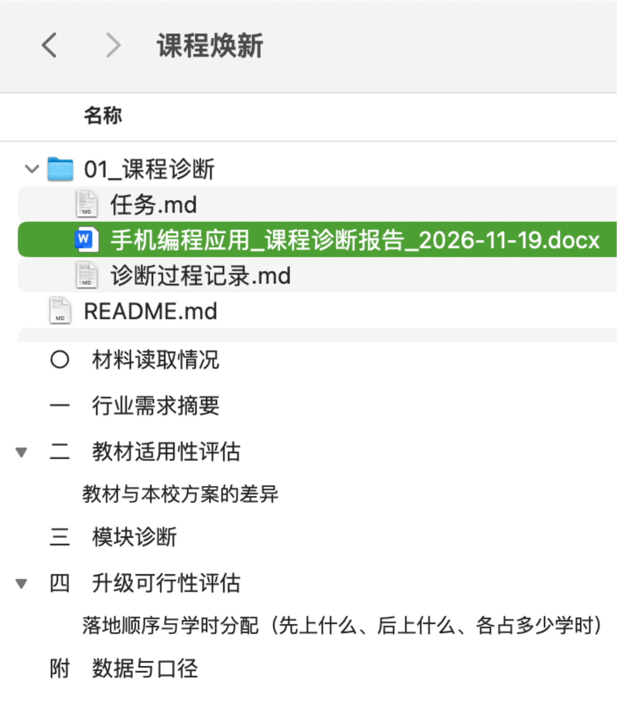
📋 Word 导航窗格:一眼看到四部分是否齐全
i️ 补充说明:WorkBuddy 输出为 Word/Excel 文档是正常行为 ,不是错误--打开文档即可查看完整内容。
第二步:判断诊断结果质量--每部分内容达标吗?质量 查"好不好"
📌 对应提示词的 请帮我做课程诊断 六条要求--AI 做了,但做得好不好?
四部分都齐了,接下来看内容质量。用讲师案例做正例对照。
⚠ 质量不达标 → 追问细化
第一部分:有内容但没数据
"该技术已过时""建议更新"--没有使用率、岗位数据
→ "请给出具体的数据和来源"
第一部分:AI 没联网就分析
数据像编的,没有来源链接
→ "请先联网搜索行业最新需求再对比"
第三部分:没有表格全是文字
不方便快速浏览对比
→ "请按表格格式输出,列名:模块名称|现状|行业需求差距|升级建议"
第三部分:升级建议太抽象
"建议引入新技术"--没说什么技术、怎么替代
→ "请给出具体的技术方案和替代关系"
第四部分:没分优先级或脱离实际
没考虑课时和学生基础,建议一次全改
→ "请结合学时和学生基础给出分优先级方案"
✅ 质量好的标志(附讲师案例正例)
1 第一部分:行业需求有数据支撑
"Kotlin 使用率 78%,Top 1000 应用中 95% 已迁移"--不是笼统说"需要更新"
2 第二部分:教材评估切中要害
指出教材用 Android Studio 3.2.0 + Android 9.0,已落后 8 个大版本--你看了会点头
3 第三部分:诊断表格有具体技术方案
"以 Room 替代 SQLiteOpenHelper,引入 ViewModel + StateFlow"--不是"建议升级"四个字
4 第四部分:可行性评估结合学时和学生基础
"学生只学过 C 语言,Java 语法要从零教,第一优先级 Kotlin + Git 占前 12 学时"--有具体安排
第二步补充:AI 报了"教材和本校方案对不上"吗?教师判断 查"合不合"
提示词第 6 条要它对比两边,但不少模型只回一句"学时略有差异" 就过去了--对比它做得来,判断哪一条要紧它做不来。第二部分末尾那段「教材与本校方案的差异」,自己逐条对一遍:
对着看
教材《教学大纲》
本校《培养方案》
学生起点 假定已修「Android 移动开发基础」
只学过 C 语言 ,Java 语法要从零教
考核方式 闭卷考试:平时 30% + 期末 70%
考查:考勤 30 + 作业 30 + 大作业 40
学时总量 67(讲课 28 + 上机 39)
72 学时(全部记作实践)
各章学时 3·10·10·10·8·10·12·4
4·12·12·12·8·12·8·4
⚠ 学时那一行不是问题 :方案 72 学时比教材的 67 还多 5 个;教材那 28 个讲课学时也不是"没处安排"--讲 10 分钟、练 30 分钟本来就是实训课的常态,两边只是记账口径不同 。真正对不上的是前两行。
💡 教材卖给全国,方案按校本定。这两样从来没被放在一起对过 --照教材的教案直接上课,会在两处踩空:内容一上来就假定学生会 Android,练完又没有闭卷考试来接。
🔎 拿自己的课对三句
教材是按什么基础编的?我的学生实际是什么基础?
教材的考核方式和这门课的考核方式一致吗?--按考试设计的教材,和按作品交差的课,练的东西不一样
教材各章学时和方案给的总学时怎么分配?差的那几节,是砍内容还是压练习?
💬 它只回了"略有差异"、或者整段没提:把培养方案和教材教学大纲一起拖进对话 ,再问 "逐条对比这两份材料:学分、学时分配、考核方式、假定学生什么基础,列出不一致的地方,再说照教材教案上课会在哪里接不上"--材料不给全,它只能猜。
第三步:确认优先级方案--AI 排好了,你来把关合理性 查"对不对"
📌 对应提示词第 2 条 找出匹配度最低的 3-5 个模块 + 第 5 条 评估升级建议的可行性--AI 已给出优先级方案,你做教师专业判断
AI 在第四部分"可行性评估"里已经排好了优先级,但 AI 不了解你的实际课时、学生基础和课程衔接--合理就用,不合理就追问调整 。
🔎 四个判断维度
合理性 :建议的技术栈是否确实是行业主流?可行性 :你的学生基础能否跟上?学期内能消化吗?渐进性 :好的建议是"保留XX,逐步引入XX",不是"全部替换"相关性 :建议是否跑题?应聚焦"课程升级",不是发散教学建议
💡
讲师案例 :AI 给出优先级--第一 Kotlin+Git,第二 Compose,第三 协同开发。用四个维度逐个检查:
✅ 合理性 :Kotlin 替代 Java 确实是行业主流,判断合理
❌ 可行性 :学生只学过 C 语言,这门课的 Java 语法要从零教--72 学时先被语法吃掉一块;Kotlin 的函数式写法 + Git + Compose 三样一起上,课时和接受度都吃紧
❌ 渐进性 :AI 建议 XML 全部换成 Compose,一刀切没有过渡期,应保留 XML 逐步引入 Compose
✅ 相关性 :建议聚焦课程升级,没有跑题
→ 判断结果:优先级不合理,需追问调整
💬 不合理就追问 AI :把你的约束告诉 AI,让它重新排--"学生只学过C语言,Java语法要从零教,72学时不够Kotlin+Git+Compose一起上。请调整:1先只学Kotlin基础,Git融入后续项目;2Compose保留XML过渡,不要一刀切"
追问后 AI 调整:第一优先级先 Kotlin 基础(前12学时),Git 融入后续项目实操,Compose 第二优先级下学期引入
⚠ 追问话术参考 :"我的专业还有其他相关课程,请考虑课程衔接" / "请给出 Kotlin 基础的课时拆分方案" / "Compose 对零基础学生是否友好?"
📋 诊断表格:5个模块对比
📋 可行性评估:三优先级方案
✅ 结果分析完毕
三步走完:完整性 ✓ → 质量 ✓ → 优先级方案已确认。下一步进入学情分析,了解学生情况后再设计教学方案
6.1 👥 学情分析--了解你的学生
为什么要了解学生?
课程诊断找出了课程本身的问题 (教材过时、内容脱节),但同样的课程,面对不同的学生,教法应该不同 。
两个关键问题:
学生哪里薄弱 ?--决定升级时重点补什么
学生差异多大 ?--决定教学要不要分层 、怎么分层
不做学情分析会怎样?
教学设计凭感觉 ,不知道学生到底哪里不会
项目难度拍脑袋定 ,太难学生跟不上,太简单学生没收获
分层教学无法实施 ,不知道哪些学生需要额外辅导
不了解学生就改课程,就像不量体温就退烧--方向可能对,但力度和重点全凭感觉。
做了学情分析之后?
AI 根据真实数据 找出薄弱模块,不再靠猜
教学设计有的放矢 ,重点模块多安排课时
自动识别需要关注的学生群体 ,支持分层辅导
为什么用成绩表做切入点?
了解学生有很多方式(问卷、访谈、课堂观察),但成绩表是中职老师手头最容易拿到的结构化数据 --不用额外收集,每个教务系统都能导出。
成绩表能反映出三层信号:
👥
学生分层
谁要重点帮、谁能吃拓展→辅导精准到人
当然,成绩不是全部--课堂表现、学习态度、作业完成情况 AI 看不到,这些需要你来补充。但成绩表是最快、最客观的起跑线 。
🤖
AI 做的
上传成绩表 → 自动统计 分析
生成学情报告 (五部分输出)
找出薄弱模块 + 重点关注学生
👩🏫
你做的
确认结果是否符合教学实际
补充 AI 不知道的课堂表现 信息
决定怎么用 这份学情报告
6.2 👥 实操 2:学情分析--讲师演示 → 学员跟做 ⭐实操
👨🏫 第一阶段:讲师演示
🔎 用三要素拆解这条提示词
🎭 角色设定
"接着上次的课程诊断做学情分析...优先升级模块是..."→ 说清这次要做什么 + 带上上一步的产物
🎯 任务明确
"整体情况→成绩结构→占比分析→关联分析→重点关注→教学建议"→ 6个递进式分析任务
📋 输出约束
"输出格式:六部分依次输出"→ 结构化输出,与提示词六步一一对应
💡 成绩文件描述(班级数/人数/列名/占比)不是三要素之一,但属于上下文信息 --告诉 AI 数据结构,AI 才能正确解析列含义。添加本地文件 + 文字描述双管齐下。
👨🏫 演示用 填的是讲师的课,别复制到你的账号;橙色底纹那几处就是要换成你自己的
接着上次的课程诊断做学情分析。诊断中优先升级的模块是「Kotlin 基础」 ,现在要分析学生成绩,为后面的教学设计升级提供数据。
我上传了一份学生成绩文件 成绩汇总_脱敏.csv 2个班级97名学生 :考勤分(满分30,占30%)、日常作业分(满分30,占30%)、期末大作业分(满分40,占40%) ,总评 = 三项之和(满分100)。表里另有一列「缺勤次数」,可用来解释考勤失分。
请帮我做学情分析:
1. 整体情况:2个班级的平均分、最高分、最低分、及格率,对比两班差异
2. 成绩结构:将学生分为优秀(≥80)、合格(60-79)、待提升(<60)三档,统计各档人数和占比
3. 占比分析:分别按 考勤分、日常作业分、期末大作业分 三列,统计各列的平均得分率(得分/满分占比),找出学生最薄弱的环节
4. 关联分析:日常作业分与期末大作业分的相关性--找出作业完成差但大作业尚可、或两者都差的学生群体
5. 重点关注:列出待提升档学生的学号、考勤分、作业分、大作业分,分析不及格的可能原因
6. 教学建议:基于以上分析,给出3条针对性的教学策略建议
输出格式:
- 第一部分:整体情况统计概览表格(含两班对比)
- 第二部分:成绩结构三档分层统计(各档人数和占比)
- 第三部分:各维度得分率占比分析(考勤/作业/大作业)
- 第四部分:关联分析(随堂作业与期末大作业相关性)
- 第五部分:重点关注名单表格(待提升档学生详细信息)
- 第六部分:教学策略建议(3条)
复制
📸 示例结果参考
AI 输出六部分:整体情况(两班对比) → 成绩结构(三档分层) → 占比分析(三列得分率) → 关联分析 → 重点关注名单 → 教学建议
⚠️ 这里用「添加本地文件」,别用 @引用
资料包里的成绩表,如果没拷进你的工作目录,@ 就找不到它 ;添加本地文件没有这个限制 。
添加后 AI 自动解析 CSV/Excel ,无需手动指定列名
? 为什么要这 6 个步骤
1 整体情况 全貌 --平均分和及格率是学情的「体温计」,班级差异提示是否需要差异化教学
2 成绩结构 分群 --三档分布揭示两极分化程度,决定教学策略是「抓低」还是「拔高」
3 占比分析 诊断 --按考勤/作业/大作业三列拆解得分率,哪一环节最低就是教学最需要加强的地方
4 关联分析 深挖 --平时 vs 期末的关联,发现「考前突击」「完全脱节」等隐藏模式
5 重点关注 行动 --列出谁需要帮助、问题在哪,课后辅导的直接依据
6 教学建议 衔接 --AI 的策略建议直接输入第三步,数据驱动的教学设计
逻辑链 全貌 → 分群 → 诊断 → 深挖 → 行动 → 衔接
? 任务和输出是什么关系
前提 提示词里「任务」和「输出」是两个独立板块 ,它们的关系取决于场景
不一致 如第一步课程诊断:任务 5 步(含联网搜索等过程性步骤),输出 4 部分。有些任务是「过程动作」 ,不直接对应一个输出章节
一一对应 如本步学情分析:任务 6 步 = 输出 6 部分。每一步分析就是一个输出维度,步骤名称直接变成报告章节标题--学员一看就知道「第 3 步分析占比 → 报告第三部分就是占比分析」
! 写法要点:任务和输出一一对应,为什么还分开写
要点 本步任务和输出数量相同(6=6),但任务讲「做什么」 (操作动作,如「统计各列得分率」),输出讲「给什么」 (产出结构,如「各维度得分率占比分析」)。分开写让 AI 更明确:不仅要执行操作,还要按指定结构输出
⚠ 重要:不要复制示例提示词!
示例提示词填的是讲师的课程数据,如果直接复制到你的 WorkBuddy,会污染你的账号记忆。请用下面的提示词模板 ,填你自己的成绩数据。如果没有带成绩表,用演示数据跟做即可。
📝 学员模板 替换橙色【请填…】,填你自己的课程信息
接着上次的课程诊断做学情分析。诊断中优先升级的模块是「【请填诊断结果中第 1 个模块】 」,现在要分析学生成绩,为后面的教学设计升级提供数据。
我上传了一份学生成绩文件 【请填你的成绩文件名.csv】 【请填班级数】 个班级【请填人数】 名学生的【请填成绩列名及占比,如:考勤分(30%)、作业分(30%)、期末考试(40%)】 。
请帮我做学情分析:
1. 整体情况:各班级的平均分、最高分、最低分、及格率,对比班级差异
2. 成绩结构:将学生分为优秀(≥80)、合格(60-79)、待提升(<60)三档,统计各档人数和占比
3. 占比分析:分别按各成绩列,统计平均得分率(得分/满分占比),找出学生最薄弱的环节
4. 关联分析:各成绩列之间的相关性--找出平时成绩差但期末尚可、或两者都差的学生群体
5. 重点关注:列出待提升档学生的编号及各列成绩,分析不及格的可能原因
6. 教学建议:基于以上分析,给出3条针对性的教学策略建议
输出格式:
- 第一部分:整体情况统计概览表格(含班级对比)
- 第二部分:成绩结构三档分层统计(各档人数和占比)
- 第三部分:各维度得分率占比分析
- 第四部分:关联分析(各成绩列之间的相关性)
- 第五部分:重点关注名单表格(待提升档学生详细信息)
- 第六部分:教学策略建议(3条)
全部保存到「课程焕新/02_学情分析」目录(没有就新建)。
复制
📋 操作步骤
1
在原对话中继续,复制提示词模板 ,根据自己课程实际情况修改【请填...】 部分
2
用 添加本地文件 方式添加 成绩汇总_脱敏.csv(在自己课的班上用,就换成你的成绩表)
4
确认输出:统计概览 + 占比分析 + 分层统计 + 关联分析 + 重点关注名单 + 教学建议
⚠ 成绩数据脱敏
上传前删除姓名列 ,学号用编号替代(如 S001)
专业 / 班级名称可用编号替代(如 B1 / B2)
保留成绩数值即可,AI 分析不需要姓名
💬 卡住了?照着这样追问 AI:
报告没分班 请分班级统计平均分、及格率,并对比两班差异 复制
没指出薄弱环节 请指出得分率最低的环节(考勤/作业/大作业),并分析原因 复制
建议太笼统 请给出具体可操作的教学策略,不要笼统建议 复制
名单没给原因 请分析每个不及格学生的可能原因 复制
✅ 成果验收:我做出学情分析了吗?
拿到了学情分析报告(六部分)
知道最薄弱环节 (得分率最低的维度)
知道分层情况 (优秀/合格/待提升各占多少)
能提炼出四条关键信息,为下一步教学设计做准备
🟢 基础
上传成绩表,拿到六部分学情报告即可。没带成绩表就用演示数据跟做。
🔵 进阶
用 6.3 步的提炼提示词,让 AI 从报告中提炼四条关键信息(最薄弱环节/分层比例/关键发现/教学建议),为下一步教学升级准备弹药。
6.3 🔍 实操 2 结果分析
💡 拿到学情报告后怎么用?
1 检查完整性
→
2 判断质量
→
3 提炼行动点
第一步:检查产物完整性--每部分的要素都齐了吗?完整性 查"有没有"
📌 对应提示词的 输出格式 部分--不仅要查六部分有没有,还要查每部分里面的关键要素是否齐全。缺了就追问补上:
📂 打开 WorkBuddy 生成的 学情分析报告 ,逐部分检查:
📊 第一部分:整体情况统计
有没有平均分? (总体+分班)
有没有及格率? (总体+分班)
有没有两班差异对比?
缺少 → "第一部分请补充各班平均分和及格率,并对比两班差异"
📐 第二部分:成绩结构分层
有没有三档划分? (优秀/合格/待提升)
有没有各档人数?
有没有各档占比?
缺少 → "第二部分请补充各档人数和占比"
📉 第三部分:占比分析
有没有考勤得分率?
有没有作业得分率?
有没有大作业得分率?
缺少 → "第三部分请补充考勤/作业/大作业三列各自的得分率"
🔗 第四部分:关联分析
有没有作业与大作业相关性?
有没有学生分类? (突击型/全程失能型等)
缺少 → "第四部分请把学生按作业与大作业表现分类,列出每类人数"
👀 第五部分:重点关注名单
有没有学生编号/学号?
有没有各列成绩?
有没有不及格原因分析?
缺少 → "第五部分请补充学生编号和不及格原因分析"
💡 第六部分:教学策略建议
缺少 → "第六部分请给出3条可操作的教学策略,不要笼统建议"
第二步:判断报告质量--每部分内容达标吗?质量 查"对不对"
📌 对应提示词的 请帮我做学情分析 六条要求--AI 做了,但做得好不好?
六部分都齐了,接下来看内容质量。用讲师案例做正例对照。
⚠ 质量不达标 → 追问细化
第一部分:整体情况统计概览表格——只给总数没分班
只说"平均61.6",没分班对比
→ "请分班级统计,对比两班差异"
第二部分:成绩结构分层——给了人数没给占比
只说"待提升 38 人",没给占比,也看不出分化到什么程度
→ "请给出各档人数和占比,并说明两极分化程度"
第三部分:各维度得分率占比分析——只列数字没解读
"考勤95.7%、作业56.6%、大作业39.9%"--没说哪个是薄弱环节
→ "请指出得分率最低的环节并分析原因"
第四部分:关联分析——只说相关没分类
"有一定相关性"--没有具体学生分类
→ "请把学生分为'作业差大作业尚可'和'两者都差'两类,列出人数"
第五部分:重点关注名单表格——名单没给原因
只列学号和分数,没分析为什么不及格
→ "请分析每个不及格学生的可能原因"
第六部分:教学策略建议——建议太笼统
"加强教学管理"--没说怎么加强
→ "请给出具体的可操作策略,不要笼统建议"
✅ 质量好的标志(附讲师案例正例)
1 第一部分:整体情况统计概览表格——分班对比有差异
1班均62.9、2班均60.5,明确指出2班更弱--不是只给一个总数
2 第二部分:成绩结构分层——三档清楚且点出结构问题
优秀 17.5% / 合格 43.3% / 待提升 39.2%,并明确"待提升接近四成、两级分化明显"--不是只罗列三个数字
3 第三部分:各维度得分率占比分析——指出最薄弱环节
"期末大作业得分率仅39.9%、日常作业56.6%,远低于考勤95.7%"--一眼看出问题在动手产出
4 第四部分:关联分析——学生分了类
28人"作业尚可但大作业交不出"(平时应付、期末失能)、35人"两者都差"(全面放弃)--有具体人数和标签
5 第五部分:重点关注名单表格——不及格有归因
三类:几乎全勤但两项都不及格18人、作业尚可大作业交不出28人、全面放弃35人--不是光列名单
6 第六部分:教学策略建议——建议可操作
"结对编程+当场验收""过程检查点+分层选题""2班优先干预"--每条都有具体动作
第三步:思考教学设计需要什么--你的关注点是什么?思考 问自己"我要解决什么"
📌 学情报告不是看完就存--它的价值是给下一步教学设计升级提供方向和依据
报告确认无误后,先别急着进下一步。停下来想一想: 如果基于这份报告重新设计教学,你最想解决什么问题?你需要从报告中提取哪些信息?
🤔 先自己想想这几个问题
学生最薄弱的地方 是什么?教学重点该放在哪?
学生分层情况 如何?需不需要分层教学?
报告里有没有让你意外的发现 ?该怎么针对性干预?
AI 给的建议靠谱吗 ?哪些能直接用,哪些要改?
💬 也可以让AI帮你提炼
💡 建议先自己想,再用AI对照,看看自己遗漏了什么。
💬 如果 AI 的建议不符合实际 :比如 AI 建议"结对编程 ",但你们实训室是固定座位不好安排——把你的约束告诉 AI,让它调整:"我们学校实训室是固定座位,结对编程不好安排。请调整为同桌互助检查的方式,每节课结束前互相验收"
🔎 从报告里可以提炼的关键信息
想完上面的问题,对照报告看看这四条你能不能找到:
最薄弱环节 :哪个维度得分率最低?→ 决定教学重点分层比例 :优秀/合格/待提升各占多少?→ 决定是否分层关键发现 :有没有隐藏模式(如"全勤零产出""两班失败模式不同")?→ 针对性干预AI 教学建议 :3条策略→ 参考但不盲从
✅ 结果分析完毕
三步走完:完整性 ✓ → 质量 ✓ → 关键信息已提炼。下一步进入教学设计升级,把课程诊断和学情数据转化为具体的教学方案
⚠ 注意
• 这里用的脱敏数据是演示用--回校后用你自己班级的真实成绩 (记得先脱敏)数据层面的学情 ,课堂表现、学习态度等需要老师自己补充教学设计的输入 ,不是最终结论--老师结合实际情况判断
7.1 🚀 教学设计升级--从传统讲授式到项目式教学
传统教学模式
🎤 老师讲
→
🎧 学生听
→
✍️ 做作业
→
📝 考试
特点:知识单向传递 ,学生被动接收
问题:学生动手能力弱,学完不会用
项目式教学模式
📦 真实项目
→
🔧 学生动手
→
👨🏫 老师指导
→
🎯 成果展示
特点:知识在项目中主动建构 ,学生解决问题
优势:学生动手能力强,学完能做
🎯 项目式教学适用于哪些课程?
不是所有课程都适合全套项目式,判断标准看三个"有" :
📦
有产出
学生能做出可验收的成果
🏢
有真实场景
项目源于真实工作情境
🟢 高度适配
电子信息·计算机·机电·建筑·数字媒体·护理·电商·烹饪三个"有"全满足
🟡 中度适配
财经·会计·汽车维修·农林·学前教育满足两个,需改造设计
🔴 低度适配
数学·思政·英语·体育建议用任务驱动法替代
💡 你的课程如果三个"有"都满足→大胆项目式;只满足一个→先用任务驱动法降低粒度,逐步过渡
💡 AI 帮你做的事 :把传统教案自动升级为项目式教学设计--结合诊断结果和学情数据,目标重构、活动设计、评价方式全配套。你做的事 :确认项目是否贴合本校学生实际,核实关键知识点。
7.2 🚀 实操 3:教学设计升级--讲师演示 → 学员跟做 ⭐实操
👨🏫 第一阶段:讲师演示
🔎 用三要素拆解这条提示词
🎭 角色设定
"请基于前面课程诊断的薄弱模块清单和学情分析的关键结论..."→ 说清这次要做什么 + 指明带上哪两样产物
🎯 任务明确
"把诊断报告中优先升级的模块从传统讲授式升级为项目式教学"→ 做什么:将薄弱模块的教学方式升级为项目式
📋 输出约束
"按4部分依次输出:教学目标→项目主题→分课时表格→评价方式,第3部分用表格"→ 给什么:4部分结构化输出,表格化呈现
💡 虽然前两步的结果已在同一对话中,AI 有上下文记忆 ,但手动补充关键信息能让 AI 输出更聚焦 --避免长对话中细节丢失,把学情报告中的四条关键发现直接注入提示词。
👨🏫 演示用 填的是讲师的课,别复制到你的账号;橙色底纹那几处就是要换成你自己的
请基于前面课程诊断的薄弱模块清单和学情分析的关键结论,把诊断报告中优先升级的模块从传统讲授式升级为项目式教学。
关键信息补充(来自学情分析的提炼):
- 最薄弱环节:期末大作业得分率仅39.9%、日常作业56.6%,"人在心不在" 优秀17.5% / 合格43.3% / 待提升39.2%,待提升比例过高 18人几乎全勤但作业和大作业都不及格;2班大作业均分14.4,明显低于1班17.6 结对编程+当场验收、过程检查点+分层选题、2班优先干预 复制
? 为什么要在提示词里补充四条关键信息
省略写法 只写「基于前两步的结果」--AI 从长对话记忆中自行提取,可能丢失细节,输出泛泛而谈
补充四条 最薄弱环节 + 分层比例 + 关键发现 + AI 建议--AI 输出直接聚焦你的学情,方案更落地
实际影响 聚焦度 :直接锚定最薄弱环节,输出不跑偏;细节保持 :长对话中细节可能被压缩,显式注入不依赖记忆;个性化 :输出直接对应你的学情,而非通用方案
唯一注意 四条信息要准确--如果提炼错了,AI 会基于错误信息输出方案。所以 6.3 步的提炼质量很关键
配比 对话记忆提供完整背景 ,四条关键信息提供聚焦方向 ,两者配合效果最好
📸 示例结果参考
AI 输出:教学目标(3条) → 项目主题(汕职备忘录+分层A/B/C级选题) → 分课时表格(4课时) → 评价方式(过程60%+终结40%)
⚠️ 这一步与前两步的关系
本步直接消费 前两步的产出:
诊断报告 → 告诉 AI 升级哪个模块学情报告 → 告诉 AI 学生薄弱环节本步输出 → 为第四步资源生成提供素材
在同一对话中继续 + 手动补充四条关键信息
! 写法要点:分开写 + 关键信息补充
要点 和前两步一样任务与输出分开写 ,但多了一段「关键信息补充」 --从学情报告中提炼四条直接写进提示词,让 AI 不只靠对话记忆,而是聚焦你的实际学情输出方案。这是四步法里第一次出现「补充信息」结构
? 为什么要这 4 个任务
1 教学目标 定方向 --知识+能力+素养三维目标,明确升级后学生要达到什么水平
2 项目主题 找载体 --项目式教学的核心,选一个贴近生活的 App 让学生在做中学,同时设计分层选题 (A/B/C 级)照顾不同层次学生
3 教学活动 拆课时 --4 课时拆解,每课时教师做什么+学生做什么+用什么工具,直接能上课
4 评价方式 闭环 --过程性 60%+终结性 40%,把原来「考勤+交作业」的形式性评分换成任务检查点+当堂验收
逻辑链 定方向 → 找载体 → 拆课时 → 闭环
⚠ 重要:不要复制示例提示词!
示例提示词用的是讲师的课程,如果直接复制到你的 WorkBuddy,会污染你的账号记忆。请用下面的提示词模板 ,在你的对话中继续即可。
👥 第二阶段:学员跟做(用自己的课程)
📝 学员模板 替换橙色【请填…】,填你自己的课程信息
请基于前面课程诊断的薄弱模块清单和学情分析的关键结论,把诊断报告中优先升级的模块从传统讲授式升级为项目式教学。
关键信息补充(把你在 6.3 步学情分析中提炼的四条填入):
- 最薄弱环节:【请填6.3步提炼的最薄弱环节】
- 分层比例:【请填6.3步提炼的分层比例】
- 关键发现:【请填6.3步提炼的关键发现】
- AI 建议:【请填6.3步提炼的AI建议】
请按以下四部分输出升级版教学方案:
1. 教学目标(3条:知识目标 + 能力目标 + 素养目标)
2. 项目主题(名称 + 200字简介,贴近学生日常生活)
3. 分课时教学设计表格,列名:课时 | 教师活动 | 学生活动 | 工具 / 资源 | 评价项(分 4 个课时,重点照顾薄弱模块和待提升学生)
4. 评价方式(过程性评价 60% + 终结性评价 40%,列出具体评价项)
全部保存到「课程焕新/03_教学设计」目录(没有就新建)。
复制
📋 操作步骤
1
在原对话中继续,复制提示词模板 ,根据自己学情分析结果修改【请填...】 部分
3
确认输出:教学目标(3条) + 项目主题 + 分课时表格(4课时) + 评价方式
4
检查输出--教学目标是否合理?项目主题是否贴近生活?评价方式是否完整?
5
如果不满意,可以追问调整(如"项目主题换成更简单的""评价项增加课堂表现")
💬 卡住了?照着这样追问 AI:
项目主题不贴近学生 换成更贴近中职学生日常生活的项目,并设计 A/B/C 三级分层选题 复制
没照顾薄弱学生 请针对最薄弱环节和待提升学生,增加针对性教学活动 复制
评价不具体 请列出每个评价项的评分标准和权重 复制
课时活动太笼统 请更具体地描述每个课时的教学活动 复制
✅ 成果验收:我做出升级方案了吗?
拿到了升级版教学方案(四部分)
有分层选题 (A/B/C 级),照顾不同层次学生
分课时表格写清了教师活动 / 学生活动 / 工具资源
有过程性评价 (占比 ≥50%)
🟢 基础
按提示词模板生成四部分教学方案即可,重点确认四个部分都齐。
🔵 进阶
追问 AI 针对你学情的薄弱环节做针对性设计(如结对编程、当场验收、分层选题),让方案真正落地。
💡 关键提醒
• 提示词中的四条关键信息来自6.3 步你自己的提炼 --不是照抄示例,而是从你的学情报告中提炼出属于你课程的四个维度
7.3 🔍 实操 3 结果分析
💡 拿到教学设计方案后怎么用?
1 检查完整性
→
2 判断设计质量
→
3 追问调整
第一步:检查产物完整性--四部分都有没有?完整性 查"有没有"
📌 对应提示词的输出要求--你在提示词里要求 AI 输出四部分,先查有没有缺。缺了哪部分就追问补上:
📋 检查项
⚠ 缺了怎么办
☑
第一部分:教学目标 有没有? 3条(知识+能力+素养)
缺失 → "请补充教学目标"
☑
第二部分:项目主题 有没有? 名称+简介+分层选题
缺失 → "请补充项目主题和分层选题设计"
☑
第三部分:分课时教学设计表格 有没有? 4课时,列名齐全
缺失 → "请补充分课时教学设计表格"
☑
第四部分:评价方式 有没有? 过程60%+终结40%
缺失 → "请补充评价方式"
第二步:判断设计质量--每部分内容达标吗?质量 查"对不对"
四部分都齐了,接下来看内容质量。逐项对照检查:
教学目标 ：是否涵盖知识+能力+素养三维?
⚠ 只有一条知识目标 → "请补充能力目标和素养目标"
项目主题 ：是否贴近学生生活?是否设计了分层选题(A/B/C级)?
⚠ 项目太宏大/脱离学生 → "换成更贴近学生日常生活的项目,并设计A/B/C三级分层选题"
分课时表格 ：每课时是否写清教师活动+学生活动+工具/资源?
⚠ 活动描述太笼统 → "请更具体地描述每个课时的教学活动"
评价方式 ：过程性占比是否≥50%?是否列出具体评价项和权重?
⚠ 评价项不具体 → "请列出每个评价项的评分标准和权重"
⚠ 重点检查：是否针对学情报告中的薄弱环节 做了针对性设计(如结对编程/当场验收)?如果没有 → "请根据学情报告中的薄弱环节,在第X课时增加针对性教学活动"
第三步:追问调整--不满意就追问,不用重来迭代 查"好不好"
在原对话中直接追问,AI 会基于已有上下文调整,不用重新开始:
项目主题不合适
→ "换成与XX行业更贴近的项目"
课时活动太笼统
→ "请更具体地描述每个课时的教学活动"
评价项不够具体
→ "请列出每个评价项的评分标准"
缺少薄弱环节针对性设计
→ "请根据学情报告,在第X课时增加针对性干预"
✅ 追问到四项检查全部通过 → 方案可定稿 ,进入第四步资源生成
8.1 📦 教学资源生成概览--4 种资源各司其职
🎭 进入第四步前,先搞清楚:你和 AI 各负责什么?
前三步 AI 帮你完成了诊断、分析、方案设计。第四步 AI 要生成教案/PPT/习题等资源了--这时候最容易出现"直接拿AI产出上课"的坑。
🤖 AI 负责
快速生成初稿(教学方案/教案/课件/习题)
基于数据做客观分析(课程诊断/学情报告)
提供多种可选方案供教师挑选
按追问指令迭代调整
⚠ AI 给的是初稿不是终稿，比如练习题答案要自己做一遍验证
👨🏫 教师负责
把控方向：教学目标是否符合人才培养方案?
核实内容：知识点是否准确?是否过时?
补充校情：本校学生特点/实训条件/课程衔接
最终拍板：方案能不能进课堂,老师说了算
⚠ 教案/PPT 是框架不是成品,切忌直接拿 AI 产出上课--至少过一遍+改一遍
✅ 协作流程：AI 出初稿 → 老师审阅修改 → 再让 AI 迭代 → 老师最终拍板
💡 第三步产出了教学设计方案 (目标重构+活动设计+评价方式),第四步把方案落地为可直接上课使用的文件 --教案、PPT、练习题、实训案例。
📄 1. 教案 (Word)
解决:教学规范与备查
学校教学检查必备。AI 自动生成标准格式教案,含教学目标、重难点、教学过程、板书设计。
📋 产出长这样 ：
📊 2. 课件 PPT (PPT 文件)
解决:课堂演示与视觉呈现
课堂讲授核心载体。AI 生成初版后微调即可用,比从零排版快数倍。
📋 产出长这样 ：现代简洁 · 蓝色调 · 一键生成
✏️ 3. 练习题 (Word)
解决:学习效果检验
基础题+应用题+拓展题分层设计,AI 自动生成题目、参考答案和评分标准。
📋 产出长这样 ：基础题 ：创建备忘录列表,用 ListView 展示 5 条记录应用题 ：添加长按删除功能 + 确认弹窗拓展题 ：接入本地数据库,实现数据持久化
🔧 4. 实训案例资料包 (2 个 Word)
解决:学生实操落地
项目式教学核心载体。学生任务书明确"做什么",教师指导书明确"怎么带"。
📋 产出长这样 ：学生任务书 ：项目背景「汕职备忘录」App → 分步任务(搭建UI → 增删功能 → 数据持久化) → 提交规范教师指导书 ：解题思路 + 参考方案 + 评分标准 + ⚠️ 3个常见坑预判
💡 一句话： 实训案例：学生动手落地，任务书+指导书
✨ 新颖形式:交互式课件
除了传统 PPT,还可用 WorkBuddy 生成 HTML 交互课件 ,浏览器打开即可操作互动。学生能直接拖动、调整参数,而不仅是看静态图片。
1
WorkBuddy 生成 HTML 交互代码(如"帮我用 HTML+CSS+JS 做一个光的折射模拟实验")
2
WorkBuddy 自动保存为 .html 文件到工作目录
💡 适用场景 :物理/化学实验模拟、算法执行可视化、数据看板交互等需要动态演示的知识点。浏览器全屏(F11)体验更佳。
🖥️ 你现在正在看的这个课件,就是用 WorkBuddy 生成的 HTML 交互课件！ 一条提示词 → 浏览器打开即用
8.2 📝 实操 4:教学资源一键生成--讲师演示 → 学员跟做 ⭐实操
👨🏫 第一阶段:讲师演示
🔎 用三要素拆解这条提示词
🎭 角色设定
"请按上面确定的教学设计方案(我自己的课程、我自己的项目主题)..."→ 说清这次要做什么 + 锁住改的是谁的课
🎯 任务明确
"生成 4 种教学资源:教案、PPT、练习题、实训案例"→ 4 个并列任务,每个指定文件类型
📋 输出约束
"教案含教学过程+板书设计,PPT 8-10页蓝色调,练习题5道分层..."→ 每种资源指定具体内容和格式
💡 前三步的结果已在同一对话中,AI 有上下文记忆 ,不需要复述教学设计内容。这步的关键是把升级方案落地为可上课用的资源 。
👨🏫 演示用 填的是讲师的课,别复制到你的账号
请按上面的教学设计方案,生成以下 4 种配套教学资源:
1. 教案(Word 文档):教学目标、教学重点难点、教学过程(导入→讲授→实践→总结)、板书设计,标准教案格式含时间标注
2. 课件 PPT(PPT 文件):8-10 页,含封面、教学目标、项目介绍、分课时教学流程、评价标准、总结,现代简洁蓝色调
3. 练习题(Word 文档):5 道题(2 基础+2 应用+1 拓展),每题含题目、参考答案、评分标准
4. 实训案例资料包(2 个 Word 文档):
- 学生任务书:项目背景(约 200 字,贴近中职学生日常生活)、学习目标(3 条:知识+能力+素养)、任务要求(分步骤,每步写清做什么+交付什么)、提交规范(文件命名+格式+截止时间)
- 教师指导书:解题思路(分步骤提示)、参考方案要点(关键步骤指引)、评分标准(每项任务配分值+评分细则)、常见问题预判(3 个学生可能遇到的坑+应对建议)
全部保存到「课程焕新/04_教学资源」目录(没有就新建)。
复制
! 写法要点:任务和输出合并写 + 依赖上下文记忆
要点 这是四步里最短的提示词 --因为前三步的课程信息、学情数据、教学设计全靠 AI 从对话记忆中提取,不需要复述。任务和输出约束合并写 :4 种资源各有各的要求,逐条列出「做什么+要什么格式」比单独写输出约束更清晰
📸 示例结果参考
AI 自动调用文档工具,逐个生成:教案(Word) → PPT(8-10页) → 练习题(5道) → 实训案例(2个Word),全部保存到「课程焕新/04_教学资源」目录
☁️ 产物分享与云端同步
生成文件后,在右侧结果区点击产物右上角的分享图标 ——这就是连接器 在实战中的用法(3.4 节提到的能力,这里动手体验):
生成公开链接 发给同事查看
上传到腾讯文档 在线编辑
上传到ima 知识库 归档
💡 上传到腾讯文档/ima 后,配合跨应用协同 :授权一次,以后 AI 就能直接读取这些内容,下次提问自动整合、还能标注来源。
⚠ 重要:不要复制示例提示词!
示例提示词用的是讲师的课程,如果直接复制到你的 WorkBuddy,会污染你的账号记忆。请用下面的提示词模板 ,在你的对话中继续即可。
👥 第二阶段:学员跟做(用自己的课程)
📝 学员模板 直接复制就能用,不用改
请按上面确定的教学设计方案(我自己的课程、我自己的项目主题),生成以下 4 种配套教学资源:
1. 教案(Word 文档):教学目标、教学重点难点、教学过程(导入→讲授→实践→总结)、板书设计,标准教案格式含时间标注
2. 课件 PPT(PPT 文件):8-10 页,含封面、教学目标、项目介绍、分课时教学流程、评价标准、总结,现代简洁蓝色调
3. 练习题(Word 文档):5 道题(2 基础+2 应用+1 拓展),每题含题目、参考答案、评分标准
4. 实训案例资料包(2 个 Word 文档):
- 学生任务书:项目背景(约 200 字,贴近中职学生日常生活)、学习目标(3 条:知识+能力+素养)、任务要求(分步骤,每步写清做什么+交付什么)、提交规范(文件命名+格式+截止时间)
- 教师指导书:解题思路(分步骤提示)、参考方案要点(关键步骤指引)、评分标准(每项任务配分值+评分细则)、常见问题预判(3 个学生可能遇到的坑+应对建议)
全部保存到「课程焕新/04_教学资源」目录(没有就新建)。
复制
📋 操作步骤
1
在你的 WorkBuddy 对话中继续(不要新开一条)
4
打开文件检查内容--AI 给的是初稿,务必过一遍+改一遍
5
改稿用人机双写 :右键文件「用 WorkBuddy 打开」 ,框选要改的地方直接下指令,不用复制粘贴
6
不满意可以追问调整(如"练习题增加实操题""PPT 换成绿色调")
✅ 检查清单
教案是否含教学目标+重难点+过程+板书 ?
PPT 是否8-10 页 ?内容是否与教学设计一致?
练习题是否分层 (基础+应用+拓展)?答案准确?
实训案例是否含学生任务书+教师指导书 ?
所有文件是否保存到04_教学资源 目录?
⚠️ 常见问题
资源太多等不及 → 删掉不需要的资源类型,只生成 2-3 种
PPT 不满意 → 追问"PPT 第 X 页改为..." ,或右键打开后框选该页用人机双写改
练习题太简单 → 追问"增加 2 道综合应用题"
实训案例不贴近学生 → 追问"项目背景换成中职生更熟悉的场景"
💬 卡住了?照着这样追问 AI:
PPT 某页不满意 PPT 第 X 页改为... 复制
练习题太简单 增加 2 道综合应用题 复制
实训案例不贴近学生 项目背景换成中职生更熟悉的场景 复制
教案缺环节 请在教案中补充板书设计和时间标注 复制
✅ 成果验收:我生成教学资源了吗?
拿到了 4 种资源:教案 / PPT / 练习题 / 实训案例
教案有时间标注 ,PPT 是 8-10 页蓝色调
练习题分层 (基础/应用/拓展),实训案例含坑预判
文件都保存到了 04_教学资源 目录,能分享/上传腾讯文档
🟢 基础
一条提示词生成全部 4 种资源,确认文件都落地即可。
🔵 进阶
只保留你最需要的 1-2 种 ,追问 AI 精修到能直接上课用(比如把练习题从 5 道加到 10 道、给教案加思政点)。
💡 关键提醒
• 学员跟做版提示词与演示版完全一致 --因为你在自己的对话中继续,AI 已有你的课程信息上下文
8.3 🚨 课程升级避坑指南
1 不要让 AI 替你决定教学理念
理念是老师的--项目式、混合式、翻转课堂,你要自己选
2 不要一次性升级太多模块
先改1-2 个模块试点 ,收集学生反馈后再扩展
3 不要忽略学情
AI 不知道你的学生是谁--在提示词里补一句这一届的具体情况 (如"这班连 Java 基础都不扎实"),AI 会据此调整教学策略(如分步引导 vs 开放式项目)
4 升级后要测试效果
收集学生反馈,迭代优化一轮升级不是终点,是起点
9.1 🌟 回去能做什么
💡 这次课教了 4 个核心场景(诊断→学情→升级→生成),以下 6 个场景覆盖中职教师高频日常需求。每条提示词符合三要素(角色+任务+输出),复制改用即可。
🔥 当场练(实训室还剩时间就做,不用等回去)
前面的四步法走完后,如果还有时间,从下面挑 1-2 个 当下就能做的场景,立刻动手:
① 教学反思 :把这节实操课的感受喂给 AI,让它帮你写一份教学反思 → 帮我校这节实操课写教学反思,从目标达成/参与度/时间分配/改进建议四维度
② 分层练习题 :拿你课程里某一章,让 AI 现出分层练习题 → 针对《XXX》第 X 章出分层练习题:基础2+应用2+拓展2,含答案解析
③ 课程大纲对齐 :把你带的课程大纲上传,让 AI 比对最新标准找脱节点 → 对比我的课程大纲和最新国家/行业标准,输出脱节项表格
📌 高频场景(6 个)
你是一位中职教师教学顾问。帮我反思《课程名 》第 X 节课的教学效果。教学目标达成度、学生参与度、时间分配、改进建议 四个维度输出,每个维度 3-5 条。
你是一位中职教务分析专家。我上传了期末成绩表,请分析分数分布、薄弱知识点、班级差异 。
你是一位职业教育教研论文写作顾问。我提供了教学实践素材(背景+做法+效果),请帮我生成论文初稿。
你是一位中职课程名 教师。请针对第 X 章《章节名 》生成分层练习题。
你是一位职业教育课程标准评审专家。请对比我上传的课程大纲与最新国家/行业标准,找出脱节点。
你是一位中职学校行政文书助手。请根据我提供的关键信息生成周报/月报/会议纪要 。
✅ 使用建议
• 所有提示词中橙色部分 替换为你的实际信息即可使用2-3 个最贴近你日常痛点 的场景先试,不用全部尝试课程焕新四步法 的方法论后,其他场景触类旁通
9.2 🧩 进阶功能速览
💡 前面 3.3 讲了记忆 、3.4 讲了专家 · 技能 · 连接器 ,这里不再重复。剩下这三样 属于"用得着再深入了解"的进阶件:回去后按需逐步探索,日常任务用默认(Agent)+ 对话 就够了。
📚
资料库
AI 生成的文件、你要查的资料,都归到这儿:目录树分类、能分享给同事
中职场景 :诊断报告、教案、PPT 存成一个库,教研组共用一套,不用来回传文件 。
📌 内测中:部分版本还没开这个入口
⏰
自动化
定时任务:设一次,永久自动跑(如每天推送新闻简报、每周五生成周报)
中职场景 :每周五自动汇总本周教学进度、生成教研组周报,不用人记着 。
📱
微信小程序
手机端独立入口,不开电脑也能用。云上模式 云端执行不依赖电脑,本机模式 远程操控电脑端;微信搜「腾讯 WorkBuddy」即可进入
中职场景 :带实训、监考时不在电脑前,手机上一句话 把活派给电脑去跑。
🎯 什么任务用什么?
一次性任务 → 默认(Agent) + 直接对话计划(Plan) 自定义 Skill
跨系统操作 → 配连接器 资料库 自动化
💡 探索建议
• 资料库 不用配什么,点进去就能用;技能也不难,挑一个你已经会的活要用再配 ,不用提前折腾能解决你的问题就够了
9.3 🎓 总结与致谢
💡 核心原则:说它是「搭档」,讲的是分工--它干活、你定方向;说它是「副驾驶」,讲的是主次--方向盘始终在你手上 。 AI 出方案,你拍板。AI 出初稿,你审阅。AI 加速迭代,你最终把关。
课程诊断 ✅
→
学情分析 ✅
→
教学设计升级 ✅
→
资源生成 ✅